Tituliniame SUDEDU puslapyje „Praktika“ rasite 3 skiltis:
Čia galima pasirinkti norimą užduotį bei sudėtingumo nustatymus. SUDEDU siūlo platų užduočių asortimentą matematikos bei lietuvių kalbos mokymui(si).
Čia rasite žinutes mokytojams ir mokiniams, taip pat ir informaciją susijusią su platformos atnaujinimais bei patobulinimais.
Ši skiltis skirta mokiniams, norintiems pagilinti savo matematikos ar lietuvių kalbos žinias, be poreikio patiems išsirinkti specifinę užduotį. Iššūkiai skirstomi į matematikos, teksto suvokimo, gramatikos kategorijas ir priskiriami mokiniams pagal jų klasę. Asmeniniai iššūkiai uždirba mokiniams 10% daugiau SUDEDU monetų nei savarankiškai pasirinktos ar mokytojo priskirtos užduotys (plačiau čia).
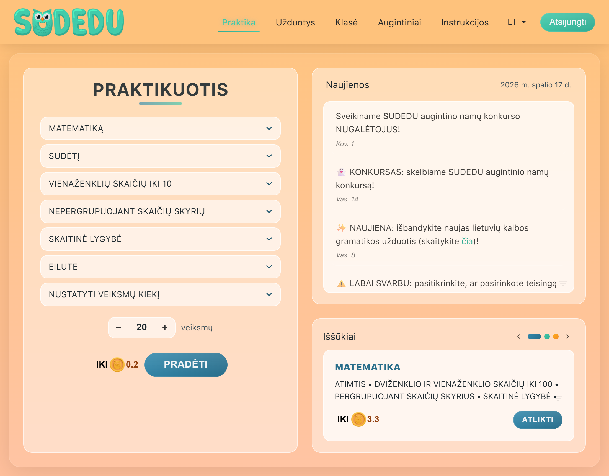
Puslapis „Užduotys“ skirtas užduočių skyrimui, atlikimui bei rezultatų analizei.
Savo paskyroje kiekvienas mokinys mato mokytojo skirtų užduočių sąrašą, kuris gali būti suskirstytas į keturias grupes:
- Vėluojama – užduotys, kurių atlikimo terminas jau praėjo;
- Šiandienos užduotys – užduotys, kurių terminas pasibaigia šiandien;
- Neatliktos užduotys – užduotys, kurios nebuvo pradėtos, bet jų atlikimo terminas dar neatėjo;
- Atliktos užduotys – naujausiai atliktų užduočių sąrašas su rezultatais.
- – užduotis dar neatlikta, jos terminas dar neatėjo;
- – užduotis pradėta, bet nebaigta (jei ji vėluoja, pusė skritulio būna geltonas arba rožinis);
- – užduotis vėluoja (terminas baigėsi šią savaitę);
- – užduotis vėluoja ilgiau (terminas baigėsi praėjusią savaitę arba dar anksčiau);
- – užduotis atlikta.
Kaip atlikti užduotį? Paspaudę užduotį sąraše arba savaitės kalendoriuje, mokiniai gali matyti jos aprašymą, datą, kada ji buvo užduota, ir dieną, iki kurios ją reikia atlikti. Užduotis pradedama paspaudus mygtuką „Atlikti užduotį“. Mokytojo užduotų užduočių progresas išsaugomas kas kelias sekundes. Jei užduotis nutrūksta (pavyzdžiui, mokinys uždaro puslapį ar praranda prieigą prie interneto), kitą kartą ją galima tęsti nuo apytiksliai tos vietos, kurioje sustota: atsakymai, klaidos ir sugaištas laikas niekur nedingsta. Pradėtos užduoties aprašyme nurodyta, kada ji pradėta ir kiek klausimų jau atsakyta arba kiek liko laiko.
Paspaudę ant atliktos užduoties užduočių sąraše, mokiniai gali matyti savo rezultatus: kada ir kiek laiko užduotis buvo atliekama, kiek atsakyta, kiek ir kokių klaidų padaryta. Mygtukas „Dažniausios klaidos“ parodo dažniausiai pasikartojančias matematikos ir rašybos klaidas iš visų per paskutines 4 savaites mokytojo skirtų ir savarankiškai atliktų užduočių.
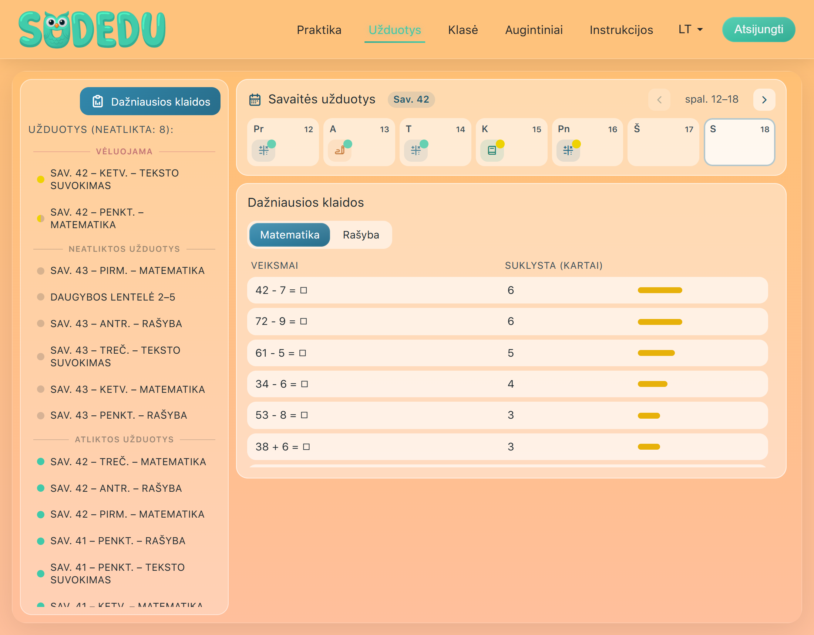
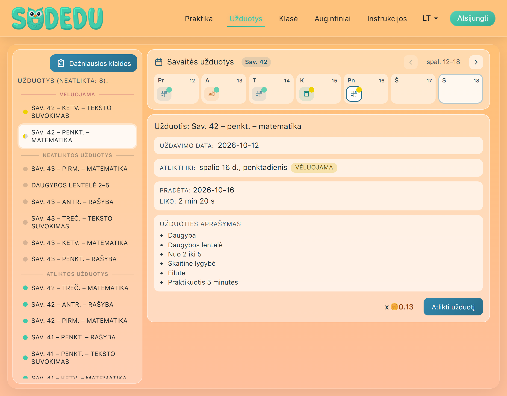
Puslapis „Užduotys“ yra mokytojo pagrindinis valdymo skydas, skirtas redaguoti ir stebėti užduotis bei analizuoti mokinių pastangas ir pažangą. Puslapyje mokytojas gali matyti klasės mokinių sąrašą – kiekvieno mokinio suvestinę galima peržiūrėti paspaudus ant mokinio vardo. Paspaudus „Klasės apžvalga“ mygtuką () šalia užrašo „Mokinių sąrašas“, rodoma bendra klasės suvestinė.
- Pačiame viršuje galima rasti bei koreguoti mokinio žinių lygį (plačiau čia), taip pat peržiūrėti mokinio asmeninius arba klasės vidutinius taškus ir nuoseklumą (plačiau čia);
- Sekcijoje „Užduotys“ galima rasti du pasirinkimus:
- Užduotos: užduotų, bet dar bent vieno mokinio neatliktų užduočių sąrašas;
- Atliktos: jau atliktų užduočių istorija. Šioje skiltyje galima rasti visų mokinių atliktų užduočių sąrašą. Užduotys gali būti filtruojamos pagal norimą laikotarpį, tipą (mokytojo užduotos arba savarankiškai atliktos užduotys, žaidimų rezultatai), arba užduotį (pavyzdžiui, tik matematikos užduotys, tik panašiai skambančių priebalsių rašyba). Paspaudus ant užduoties pavadinimo, galima peržiūrėti susijusią informaciją apie užduotį ir jos atlikimą. Jei ta pati užduotis (ar užduotis iš tos pačios grupės, plačiau čia) buvo atlikta kelių mokinių, atsidarius užduoties peržiūros langui, mokiniai, kurie atliko tą pačią užduotį, bus pažymėti (žymėjimas priklauso nuo to, ar užduotis jau atlikta, vėluojama ir panašiai – plačiau čia). Paspaudus ant tų mokinių vardų, galima greitai peržiūrėti jų rezultatus pasirinktoje užduotyje.
- Sekcijoje „Rezultatai“ galima rasti du pasirinkimus:
Visai klasei ir kiekvienam mokiniui rodomos tos pačios skiltys, todėl mokinio rezultatus lengva palyginti su klasės.
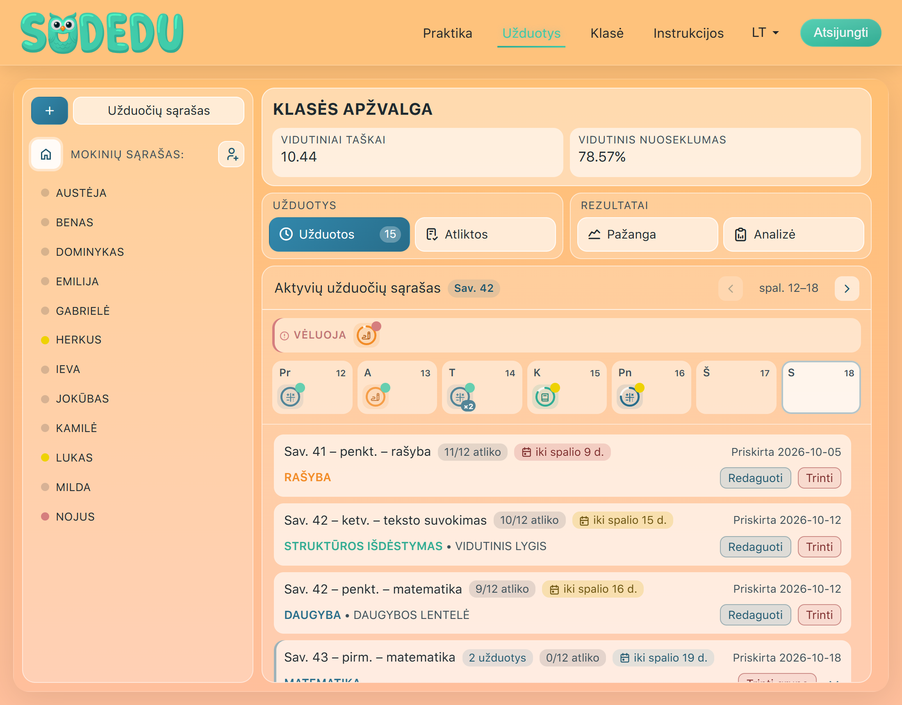
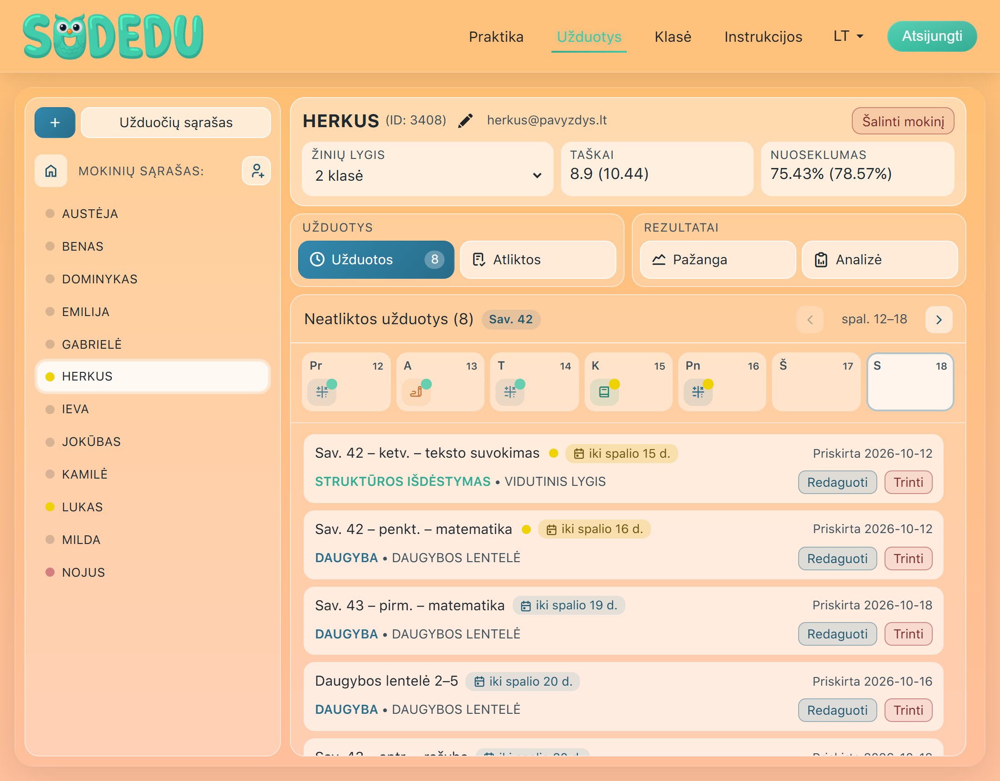
Spalvoti skrituliai yra naudojami nurodyti užduočių atlikimo būseną. Jei mokinys neatlieka užduočių laiku, indikatorius šalia jo vardo mokinių sąraše taip pat pakeičia spalvą.
- pilkas – užduotis neatlikta, bet terminas dar nesibaigė;
- žalias – užduotis atlikta;
- geltonas – užduoties atlikimas vėluoja, jos terminas baigėsi šią savaitę;
- rožinis – užduoties atlikimas vėluoja, jos terminas baigėsi praėjusią savaitę ar dar anksčiau.
Užduotys skiriamos sekcijoje, kuri atsidaro paspaudus mygtuką „Nauja užduotis“ (+). Užduotis galima skirti dviem būdais:
- „Specifinė užduotis“ – priskirama viena užduotis su jūsų pasirinktais nustatymais;
- „Kelios užduotys vienu metu“ – visos savaitės užduotys, kurias SUDEDU parenka pagal jūsų pasirinktus nustatymus, klasės išeitas temas ir mokinių rezultatus (plačiau čia).
Teksto suvokimo ir rašybos užduotims skirtoms vienu metu, visiems mokiniams parenkami tie patys tekstai ir sakiniai.
Ši funkcija leidžia užduoti visos savaitės užduotis per kelias minutes. Galimi du būdai:
- SUDEDU algoritmas: užduotys parenkamos automatiškai remiantis pradinio ugdymo programa ir atsižvelgiant į mokinių žinių lygį, mokslo metų laikotarpį bei pastarųjų savaičių rezultatus.
Labai svarbu sekcijoje „Išeitos temos“ reguliariai atnaujinti jau išmoktų arba dabar mokomų temų sąrašą, nes jis naudojamas užduočių parinkimui.
- Mokytojo šablonas: užduotys parenkamos iš specifinio užduočių sąrašo, kurį sudaro pats mokytojas. Galima nustatyti, kurios užduotys turėtų pasitaikyti dažniau, ir ar užduočių dažnumas gali būti automatiškai koreguojamas pagal daromų klaidų skaičių.
- Savaitė: užduotys gali būti skirtos dabartinei arba sekančiai savaitei;
- Dalykai: galima skirti matematikos, rašybos ir teksto suvokimo užduotis bet kokia kombinacija;
- Reikia nustatyti užduočių per savaitę kiekį. Taip pat galima koreguoti, kiek visų užduočių skirti kiekvienam dalykui.
- Savaitės dienos: dienos, kuriomis galima paskirstyti užduotis;
- Užduočių individualizavimas: ar užduotys turėtų būti visiems vienodos, ar individualizuotos pagal daromas klaidas (net pasirinkus vienodų užduočių skyrimą, užduotys skiriamos skirtingai mokiniams su skirtingu žinių lygiu. Plačiau apie žinių lygį skaitykite čia). Individualizuotos užduotys, skiriamos tai pačiai dienai, yra grupuojamos ir pavadinamos vienodai.
„Savaitės užduotys“ skiltyje matoma savaitės apžvalga su paskirstytomis užduotimis. Užduotis galima perkelti iš vienos dienos į kitą. Ant jų paspaudus, užduotis galima pakeisti alternatyviomis (jei jų yra), jas koreguoti arba ištrinti. Kai savaitės planas sudarytas, telieka jį patvirtinti paspaudus mygtuką „Užduoti“.
„Kelios užduotys vienu metu“ nustatymai yra išsaugomi, todėl kitą kartą nereikia jų vėl nustatinėti, jei pakeitimai nereikalingi.
Kaip SUDEDU algoritmas parenka užduotis? Algoritmas atsižvelgia į pastarųjų 8 savaičių rezultatus, bet didesnį dėmesį skiria paskutinėms 4 savaitėms. Tema laikoma sunkia, jei joje mokinys klysta dažniau nei spręsdamas kitas to paties dalyko užduotis – taip kiekvieno mokinio pažanga lyginama tik su jo paties rezultatais.
- Apie ketvirtadalis užduočių skiriama ankstesnėms temoms, kuriose mokinys klysta dažniausiai. Jei aptinkama, kad klaidų dažnis kartojamose užduotyse sumažėjo, laikoma, kad tema jau įsisavinta ir daugiau nebėra kartojama.
- Likusios užduotys skiriamos atitinkamo mokslo metų laikotarpio aktualiausioms temoms: pirmiausia užduodamos dar nespręstos užduotys (pradedant nuo lengviausių), o vėliau pakaitomis parenkamos tos, kuriose klystama dažniausiai, arba tos, kurios spręstos seniausiai.
- Jei tema buvo spręsta per pastarąsias 7 dienas arba vis dar neatlikta, kitą savaitę ji nebesikartoja (jei yra kitų tinkamų temų).
- Rašybos užduotyse apie trečdalis dėmesio skiriama taisyklėms, kuriose daroma daugiausia klaidų, o daugybos lentelėje – skaičiams, kurie kelia daugiausia sunkumų.
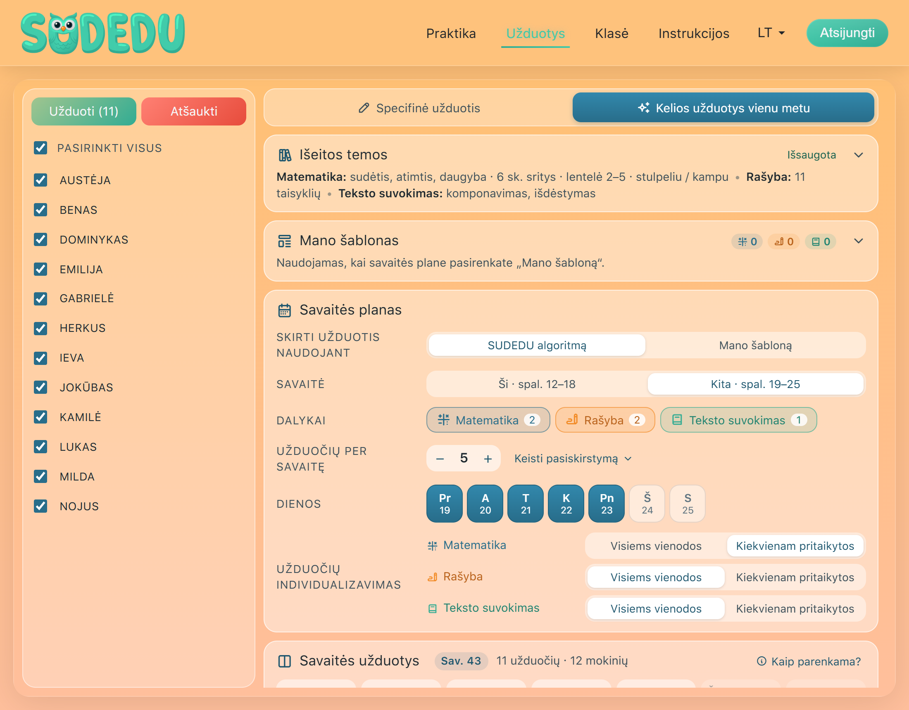
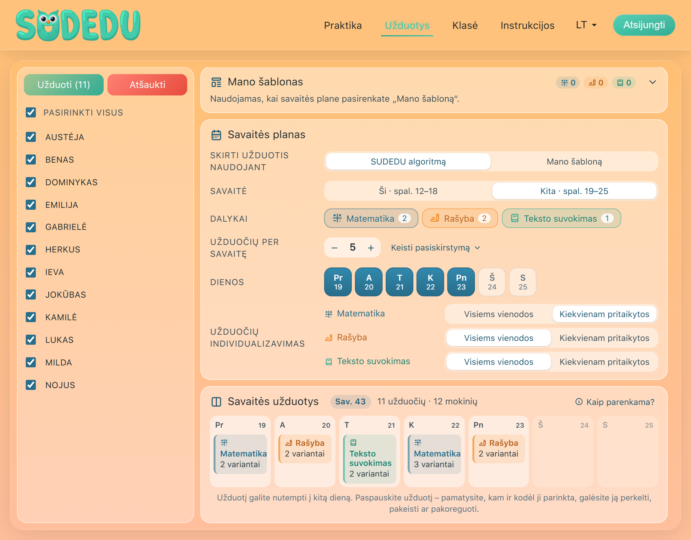
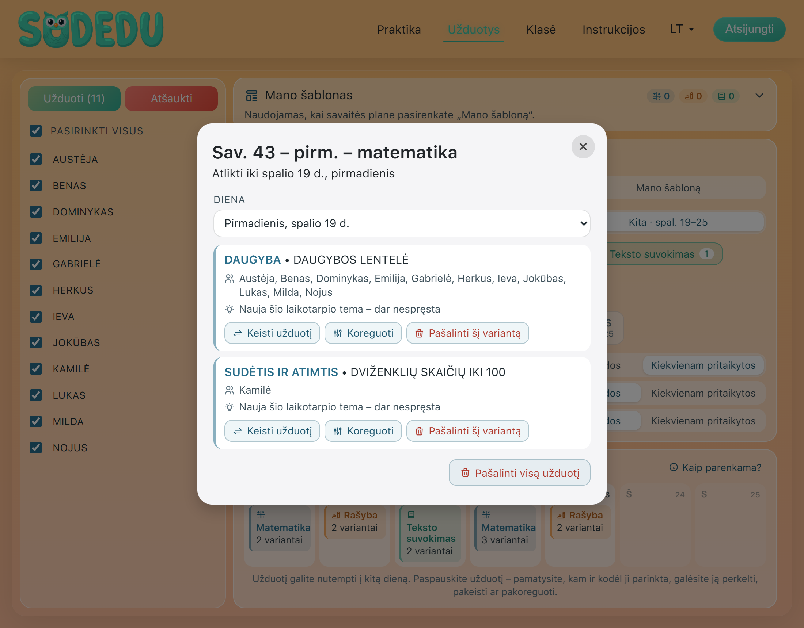
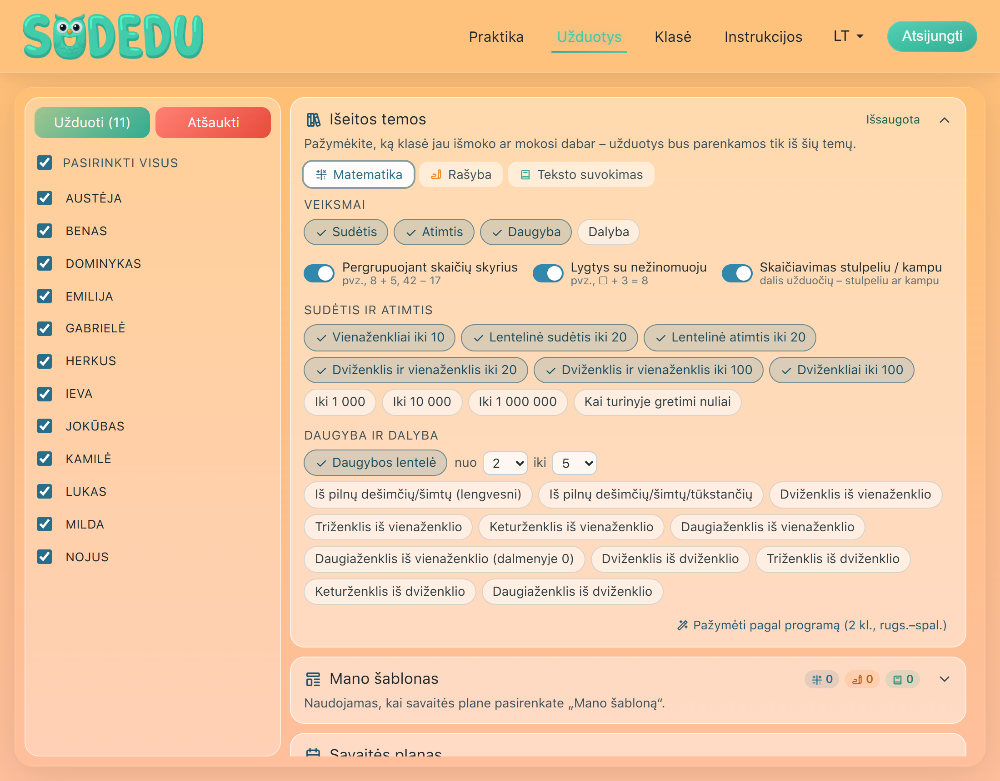
Skiltyje „Pažanga“ rodomas mokinio (arba visos klasės) ilgalaikės statistikos grafikas – kiekvienos savaitės rodiklių vidurkių pokyčiai per pastarąsias 7 savaites. Norimą rodiklį galima pasirinkti virš grafiko. Grafikas atsiranda, kai surenkami bent 3 savaičių duomenys. Į jį įskaičiuojamos visos užduotys – ir mokytojo skirtos, ir atliktos savarankiškai.
- Rodiklių apibrėžimai
- Taškai
-
Mokinių taškai apskaičiuojami pagal SUDEDU formulę, paremtą pradinio ugdymo programa. Mokiniai taškus gauna tik atlikdami
užduotis, atitinkančias arba viršijančias jų žinių lygį. Matematikos ir gramatikos užduotyse taškai skiriami tik už iš pirmo karto
teisingai atsakytus klausimus. Teksto suvokimo užduotyse galima gauti taškų ir padarius klaidų:
- Lengvas lygis:
- 1 klaida – 50% taškų
- Vidutinis lygis:
- 1 klaida – 50% taškų
- 2 klaidos – 25% taškų
- Sunkus lygis:
- 1 klaida – 50% taškų
- 2 klaidos – 25% taškų
- 3 klaidos – 10% taškų
- Lengvas lygis:
- Nuoseklumas
-
Nuoseklumas rodo, kiek procentų dienų per paskutines 7 savaites mokinys atliko bent vieną užduotį SUDEDU platformoje (priskirtą mokytojo
arba pasirinktą savarankiškai); šalia skliaustuose gali būti rodoma klasės mediana.
- Apie 70% reiškia, kad mokinys vidutiniškai atlieka bent po užduotį 5 dienas per savaitę.
- Klaidos
-
Klaidų skaičius nurodomas kartais arba išreikštas procentais palyginus su bendru atliktų užduočių kiekiu.
- 100% reiškia, kad mokinys vidutiniškai padarė vieną klaidą per vieną atliktą veiksmą (pvz., per sudėliotą tekstą ar įrašytą raidę).
- Dažniausios klaidos
-
Matematikos ir rašybos klaidų suvestinės. Rašybos klaidos gali būti grupuojamos pagal žodį arba žodžių kategoriją. Paspaudus ant žodžio, galima
pamatyti iki 3 padarytų klaidų įrašant nežinomą raidę ir pažiūrėti, kokiame sakinyje žodis buvo.
- Pasirinkus specifinę užduotį – rodomos iki 30 paskutiniųjų per šią užduotį padarytų klaidų. Klaidų kiekis nurodomas kartais.
- Pasirinkus individualų mokinį – rodomos klaidos iš visų mokinio atliktų užduočių. Klaidų kiekis nurodomas kartais.
- Pasirinkus klasės apžvalgą – rodomos klaidos iš visų klasės mokinių atliktų užduočių. Klaidų kiekis nurodomas procentais – kiek procentų visų padarytų klaidų buvo būtent ši klaida.
- Sudėlioti tekstai
-
Nurodomi teksto suvokimo užduotyse sudėliotų tekstų ID numeriai. Paspaudus ant specifinio ID numerio, susietas tekstas bus automatiškai
surandamas tekstų naršyklėje.
- Pasirinkus specifinę užduotį – rodomi visų per užduotį sudėliotų tekstų ID numeriai ir klaidų, padarytų dėliojant kiekvieną tekstą, skaičius.
- Pasirinkus individualų mokinį – rodomi sudėliotų tekstų ID numeriai, padarytos klaidos ir atlikimo data iš visų atliktų mokinio užduočių. Atlikimo data leidžia greitai pamatyti, ar pakartotinai dėliodamas tą patį tekstą mokinys daro mažiau klaidų.
- Pasirinkus klasės apžvalgą – rodomi sudėliotų tekstų ID numeriai iš visų mokinių atliktų užduočių ir vidutinis klaidų skaičius dėliojant kiekvieną tekstą. Naudojantis šia informacija, galima rasti tekstus, kurie galbūt yra sudėtingesni didžiajai daliai mokinių ir kuriuos gali būti verta užduoti pakartotinai.
Kas yra mediana? Mediana – tai reikšmė, gaunama tada, kai visi rezultatai surikiuojami nuo mažiausio iki didžiausio ir paimamas vidurinis skaičius. Jei rezultatų skaičius yra lyginis, mediana yra dviejų vidurinių skaičių vidurkis.
Skirtingai nei vidurkis, mediana nėra stipriai paveikiama kelių labai didelių ar labai mažų rezultatų. Pavyzdžiui, jei klasėje yra keli labai aukštus balus gaunantys mokiniai arba keli labai žemus balus gaunantys mokiniai, mediana vis tiek parodys tipinį (vidurinį) klasės rezultatą ir nebus „patraukta“ į viršų ar žemyn. Tai reiškia, kad mediana dažnai geriau atspindi daugumos mokinių pasiekimus nei paprastas vidurkis.
Ilgalaikės statistikos grafike pasirinkus mokymo temą (matematiką, teksto suvokimą ar gramatiką), galima pamatyti mokinio rezultatyvumo indeksą per paskutines 7 savaites. Ilgalaikės statistikos grafikas atsiranda tik surinkus bent 3 savaičių duomenis. Visos užduotys – skirtos mokytojo ir atliktos savarankiškai – prisideda prie ilgalaikės statistikos skaičiavimo.
- Rezultatyvumo indeksas leidžia mokytojams lengvai ir greitai įvertinti mokinio rezultatus bendrame klasės kontekste. Jis apskaičiuojamas pagal SUDEDU formulę, kuri apjungia pagrindines rezultatų metrikas: atliktų užduočių kiekį, teisingų atsakymų procentus, klaidų skaičių ir užduočių sudėtingumą.
- Rezultatyvumo balai gali būti nuo 0 iki 100. 0 reiškia, kad mokinys tą savaitę neatliko užduočių arba nepasiekė minimalios kartelės nei vienoje metrikoje, 100 reiškia, kad mokinys tą savaitę atliko pakankamai užduočių (stropiausi 30% mokinių), nepadarė jokių klaidų ir atliko užduotis pagal tuometinį klasės (arba aukštesnį) lygį.
- Minimali atsakytų klausimų kartelė (žemiau jos negaunama taškų už šią metriką) ir maksimalus klaidų dažnio limitas (aukščiau jo negaunama taškų už šią metriką) yra dinamiškai apskaičiuojami pagal bendrus klasės rezultatus, todėl rezultatyvumo indeksas atspindi santykinius mokinio rezultatus palyginus su kitais klasės mokiniais.
Kaip interpretuoti rezultatyvumo indeksą?
Rezultatyvumo indeksas padeda greitai įvertinti, ar mokinys nuosekliai įdeda tiek pat darbo atlikdamas
užduotis (rezultatyvumas išlieka pastovus), pradeda stropiau dirbti (rezultatyvumas kyla), ar
susiduria su sunkumais (rezultatyvumas krenta).
Rezultatyvumas gali kristi dėl kelių skirtingų priežasčių. Norint tiksliau identifikuoti priežastį, ilgalaikės
statistikos grafike taip pat galima peržiūrėti pokyčius metrikose, kurios naudojamos rezultatyvumo indeksui apskaičiuoti.
- Pasirinkus „atsakyti klausimai“, galima matyti bendrą savaitinį atsakytų klausimų kiekį bei minimalią kartelę (punktyrinė linija), apskaičiuotą iš visų klasės duomenų.
- Pasirinkus „klaidų dažnis“, galima matyti bendrą savaitinį klaidų dažnį bei maksimalų klaidų limitą (punktyrinė linija), apskaičiuotą iš visų klasės duomenų.
- Pasirinkus „santykinis sudėtingumas“, galima matyti mokinio atliktų užduočių sudėtingumą, palyginus su visų mokinių atliktų užduočių vidutiniu sudėtingumu tą savaitę. Jei mokinys atlieka tokio pat sudėtingumo užduotis kaip dauguma klasės mokinių, šis rodiklis yra 1. Jei rodiklis yra virš 1 – mokinys vidutiniškai atlieka sudėtingesnes užduotis, jei žemiau – lengvesnes. Jei mokinys atlieka užduotis per lengvas jo klasei – santykinis sudėtingumas yra 0.
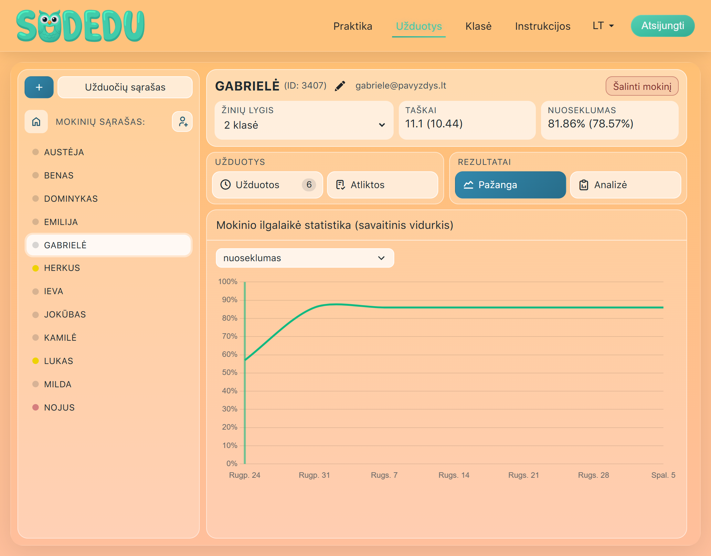
Skiltyje „Analizė“ apžvelgiami mokinio arba visos klasės pasirinkto laikotarpio rezultatai – atskirai matematikai, rašybai ir teksto supratimui.
- Apibendrinimas (bandomoji versija) – trumpas aprašymas, kiek laiko ir kaip reguliariai mokinys mokėsi, kokias užduotis sprendė, kur klydo dažniausiai ir kokie pokyčiai buvo aptikti per šį laikotarpį. Galima pasirinkti detalumo lygį: mažas – viena trumpa pastraipa, tinkanti įrašui į TAMO dienyną arba žinutei tėvams; vidutinis – išsamesnis tekstas, su papildoma informacija mokytojams; didelis – išsami apžvalga su skaičiais ir konkrečiais pavyzdžiais.
- Klaidų kategorijos – pagal rūšį sugrupuotos klaidos (plačiau apie tai čia).
- Klaidų sąrašas – visos padarytos klaidos vienoje lentelėje. Rašybos klaidas galima grupuoti pagal žodį arba žodžių kategoriją.
- Teksto supratimas – atliktų tekstų ID numeriai ir kiekviename iš jų padarytos klaidos. Spustelėjus numerį, tekstas atidaromas tekstų naršyklėje.
Kaip rikiuojamos klaidų kategorijos? Panašios klaidos sugrupuojamos į atitinkamas kategorijas, pavyzdžiui, „Trumpųjų ir ilgųjų balsių rašyba“. Klaidų kategorijos tuomet surikiuojamos atsižvelgiant ne tik į klaidų skaičių, bet ir kaip dažnai klaidos šioje kategorijoje galėjo būti padarytos ir kiek duomenų buvo tinkami analizei.
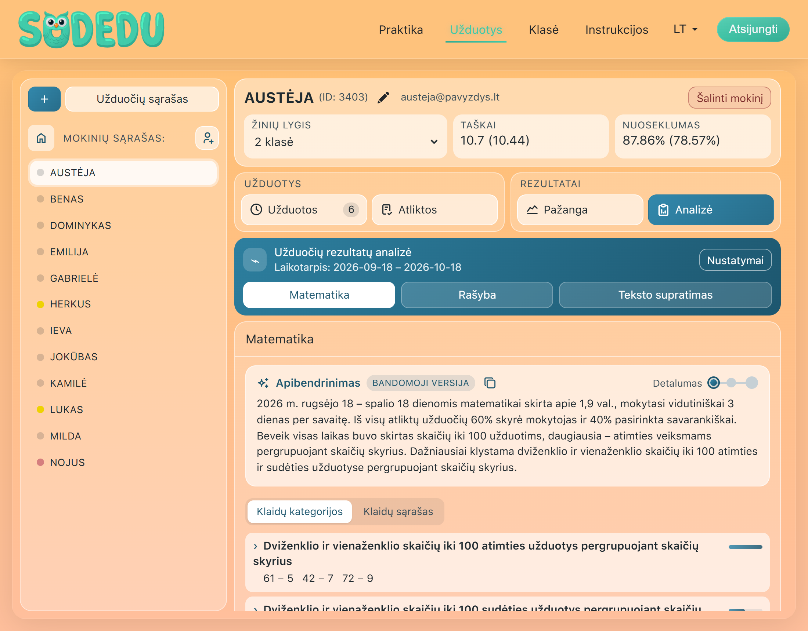
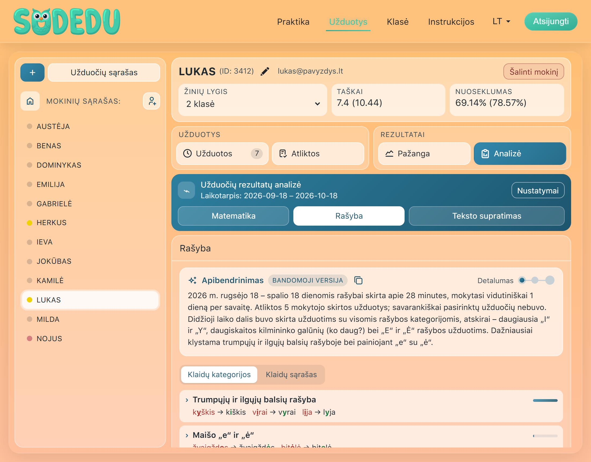
Paspaudus „Nustatymai“, galima pasirinkti, kurias užduotis analizuoti:
- Laikotarpis („Nuo“ – „Iki“);
- Įrašų tipai – mokytojo skirtos užduotys, savarankiškas mokymasis (tik pasirinkus mokinį), žaidimų rezultatai;
- Filtrai – galima pasirinkti tik užduotis su dominančiais nustatymais;
- Pasirinkti specifines užduotis – tik tam tikros užduotys iš sąrašo pasirenkamos rankiniu būdu.
Pasirinkus nustatymus, reikia paspausti „Atnaujinti analizę“.
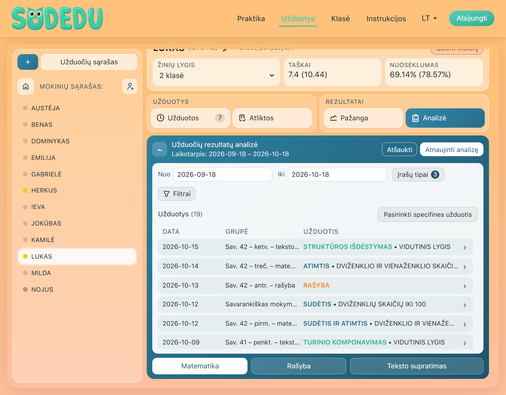
Tekstų naršyklėje galima peržiūrėti visus tekstus, naudojamus teksto suvokimo užduotyse. Tekstus galima atsirinkti pagal klasę, užduoties tipą (struktūros išdėstymas ar turinio komponavimas) ir sudėtingumą arba surasti pagal ID numerį ar ištrauką. Naršyklė atsidaro paspaudus teksto ID numerį (pavyzdžiui, užduoties rezultatuose) arba kuriant užduotį su pasirinktais tekstais. Užduoties rezultatų lange yra ir atskira naršyklė, kurioje rodomi tik tos užduoties tekstai.
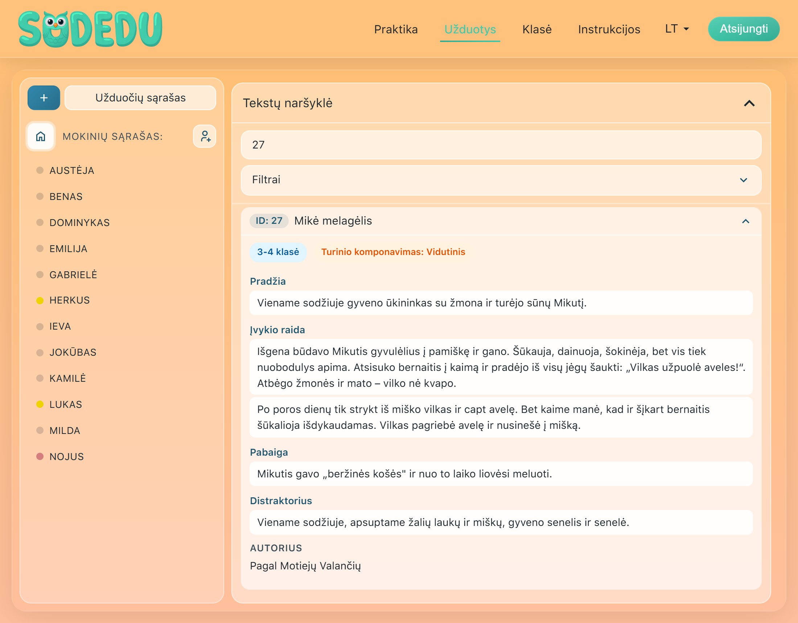
Mokinio suvestinės viršuje, laukelyje „Žinių lygis“, nurodyta mokinio klasė – ją galima pakeisti. Registruodamiesi mokiniai klasę pasirenka patys, todėl verta patikrinti, ar jie nesuklydo. Mokiniams, kurie mokosi pagal pritaikytą programą, žinių lygį rekomenduojame pakoreguoti.
Paspaudę pieštuką ( ) šalia mokinio vardo, galite vardą pakeisti –
pavyzdžiui, ištaisyti klaidą arba atskirti kelis to paties vardo mokinius. Šalia vardo nurodytas ir mokinio ID numeris bei el. pašto adresas.
Mokiniai savo vardą gali pasikeisti ir patys.
) šalia mokinio vardo, galite vardą pakeisti –
pavyzdžiui, ištaisyti klaidą arba atskirti kelis to paties vardo mokinius. Šalia vardo nurodytas ir mokinio ID numeris bei el. pašto adresas.
Mokiniai savo vardą gali pasikeisti ir patys.
Norėdami pašalinti mokinį iš klasės, jo suvestinėje paspauskite „Šalinti mokinį“ (viršutiniame dešiniajame kampe).
Puslapis „Klasė“ yra virtuali erdvė visiems klasės nariams ir bendriems užsiėmimams. Puslapyje rasite 5 skiltis:
Šioje skiltyje galima matyti visus klasės narius, įskaitant mokytoją ir mokinius. Tris aukščiausias vietas pagal 8 paskutinių savaičių surinktų taškų vidurkį užimantys mokiniai rodomi sąrašo pradžioje. Kiekvienas mokinys taip pat mato savo taškų vidurkį, nesvarbu, kurią vietą užima. Visų likusių mokinių taškai yra nematomi, ir mokiniai sąraše rodomi atsitiktine tvarka. Mokytojas prie kiekvieno mokinio mato ir jo taškus, ir turimų SUDEDU monetų skaičių.
Kaip pridėti mokytoją? Pačiame puslapio „Klasė“ viršuje yra laukelis, į kurį reikia įrašyti mokytojo ID numerį arba elektroninį paštą, kurį mokytojas naudojo sukurdamas savo SUDEDU paskyrą. Tuomet telieka paspausti „Pridėti mokytoją“ mygtuką. Toje pačioje vietoje galite rasti „Keisti mokytoją“ mygtuką, jei per klaidą susiejote savo paskyrą su ne tuo mokytoju.
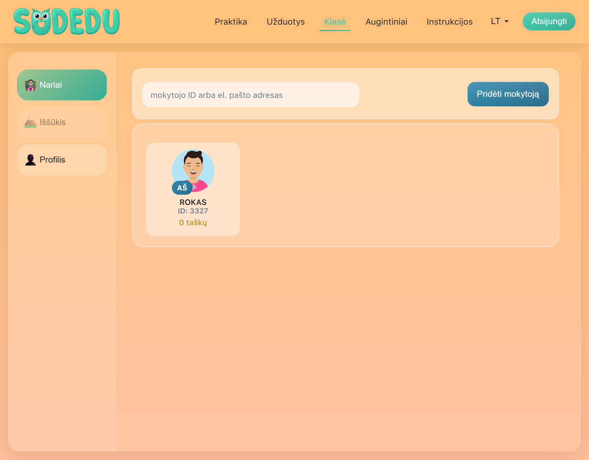
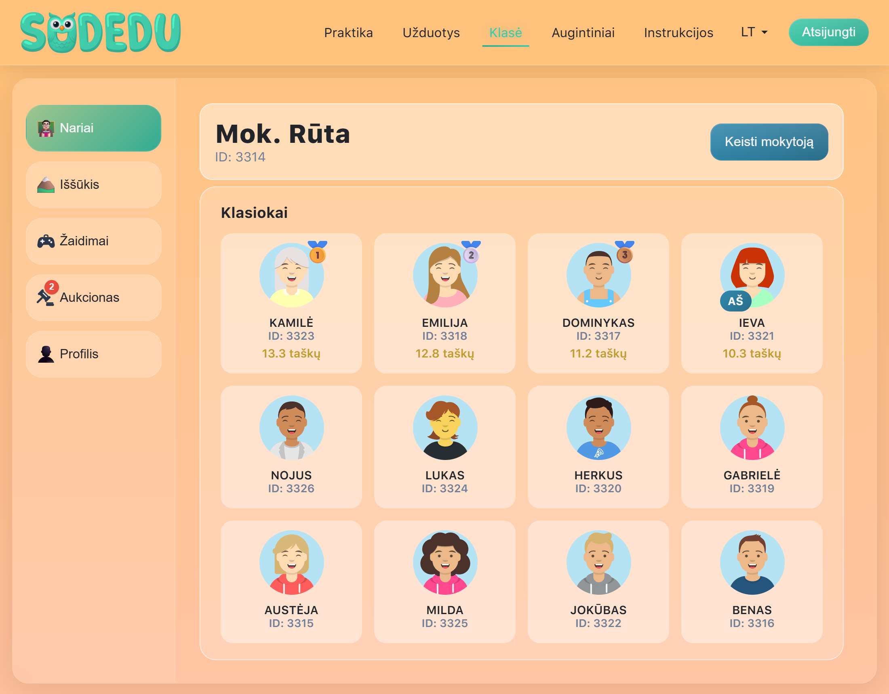
Kaip pakviesti mokinius? Mokytojai skiltyje „Nariai“ gali pakviesti mokinius į savo klasę paspaudę „Kviesti mokinius“ mygtuką. Atsiradusiame lauke reikia įrašyti arba įklijuoti (pvz., iš „Excel“ lentelės) mokinių el. pašto adresus arba ID numerius, atskirtus tarpais, kableliais ar naujomis eilutėmis. Vienu kartu galima pakviesti iki 30 mokinių. Paspaudus „Kviesti“, rodoma, kurie mokiniai pakviesti, kurie jau yra klasėje ar buvo pakviesti anksčiau ir kurių el. pašto adresai neatpažinti.
Pakviestas mokinys savo skiltyje „Nariai“ mato kvietimą (pvz., „Mok. Mokytojas A kviečia tave prisijungti prie savo klasės“) ir gali jį priimti arba atmesti.
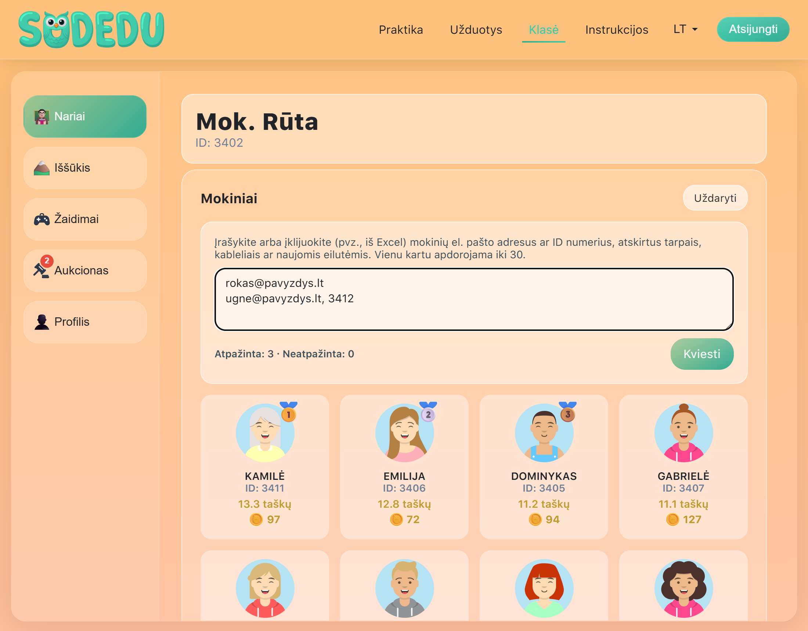
Šioje skiltyje rasite savaitinį klasės iššūkį, kuriame gali dalyvauti visi norintys mokiniai. Iššūkis sugeneruojamas pagal klasės vidutinį žinių lygį. Savaitės pabaigoje visi mokiniai, užimantys prizines vietas (auksinę, sidabrinę ir bronzinę) pagal surinktų taškų skaičių, pasidalins SUDEDU monetų prizinį fondą. Laimėtas monetas galima išleisti „Augintiniai“ puslapyje (plačiau čia).
- Matematikos ir rašybos užduotyse iššūkio taškai gaunami už iš pirmo karto teisingai atsakytą klausimą ir prarandami už
kiekvieną klaidą (net jei jos padarytos atsakant į tą patį klausimą). Teksto supratimo užduotyse taškai gali būti gaunami ir padarius klaidų:
- Lengvas lygis:
- 1 klaida – 50% taškų
- Vidutinis lygis:
- 1 klaida – 50% taškų
- 2 klaidos – 25% taškų
- Sunkus lygis:
- 1 klaida – 50% taškų
- 2 klaidos – 25% taškų
- 3 klaidos – 10% taškų
- Lengvas lygis:
- Individualus mokinio laimėjimas priklauso nuo užimtos prizinės vietos ir nuo to, kiek mokinių dalijasi prizinį fondą.
- Mokiniai klasės savaitės iššūkį gali atlikti tiek kartų, kiek nori – bus įskaitytas tik jų geriausias asmeninis rezultatas.
- Pats iššūkio atlikimas (ne laimėjimas) neuždirba SUDEDU monetų ir neprisideda prie taškų skaičiavimo taip, kaip įprastos priskirtos ar savarankiškai pasirinktos užduotys.
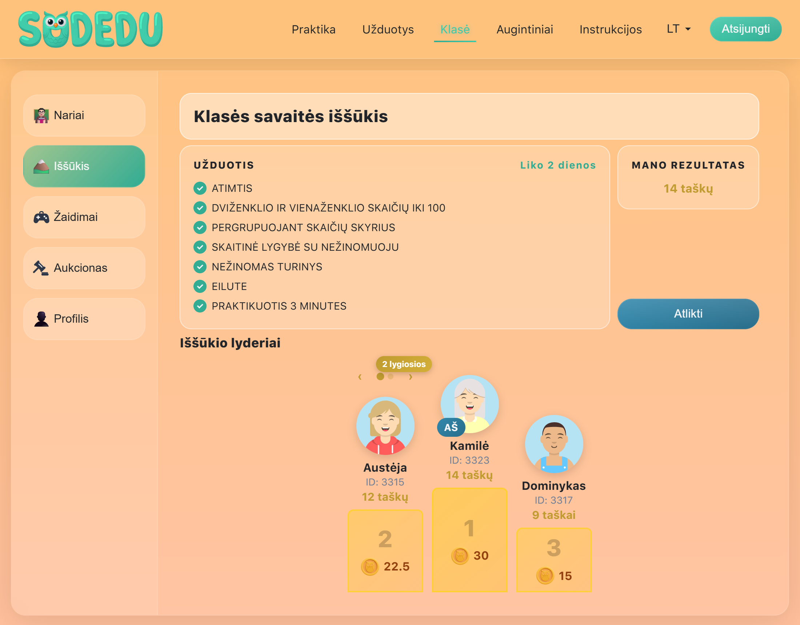
Šioje skiltyje galima rasti SUDEDU edukacinių žaidimų sąrašą. Kai kuriuos žaidimus galima žaisti individualiai, o kitus – su visa klase. Tam tikrus žaidimus gali vesti tik mokytojas ir tik didesnio ekrano įrenginiuose (pavyzdžiui, išmaniojoje lentoje). „Aktyvūs žaidimai“ skiltyje rodomi šiuo metu klasėje sukurti žaidimai. Prie žaidimo galima prisijungti spustelėjus „Prisijungti“ arba įvedus 4 skaitmenų žaidimo kodą laukelyje „Prisijungti su numeriu“. Žemiau pateikiami visi žaidimai, kuriuos galima sukurti paspaudus mygtuką „Kurti“.
- Laukiamasis: sukūrus žaidimą, atidaromas laukiamasis su priskirtu prisijungimo kodu. Prisijungę mokiniai turi paspausti „Pasiruošęs!“, o žaidimo vedėjas, kai visi pasirengę, turi pradėti žaidimą paspaudęs „Pradėti žaidimą“. Vedėjas gali pašalinti mokinį iš laukiamojo; pašalintas mokinys prie šio žaidimo vėl prisijungti nebegalės.
- Matomumas: kuriant žaidimą galima pasirinkti, ar laukiamasis bus viešas (matomas klasės žaidimų sąraše), ar privatus (prisijungiama tik įvedus žaidimo kodą). Sukūrus laukiamąjį, jo matomumo pakeisti nebegalima.
- Grįžimas į žaidimą: nutrūkus ryšiui ar netyčia uždarius puslapį, žaidėjas gali grįžti į vykstantį žaidimą per „Aktyvių žaidimų“ sąrašą paspaudęs „Grįžti į žaidimą“.
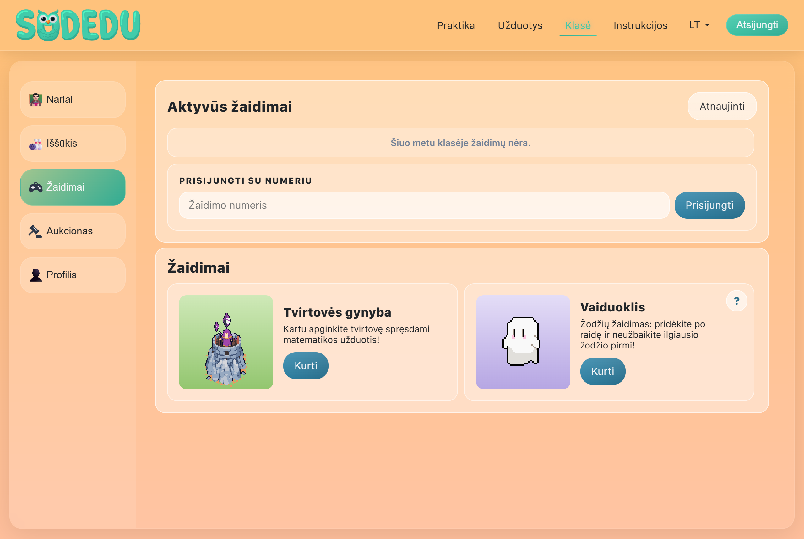
TVIRTOVĖS GYNYBA
Visa klasė kartu gina tvirtovę spręsdama matematikos užduotis. Žaidimą kuria ir veda mokytojas: žaidimo laukas rodomas mokytojo ekrane (patogu jį rodyti projektoriumi ar išmaniojoje lentoje), todėl žaidimą vesti galima tik kompiuteryje ar kitame didesnio ekrano įrenginyje. Mokiniai prisijungia savo įrenginiuose ir sprendžia įprastas SUDEDU užduotis.
- Nustatymai: užduotys (tokie pat matematikos nustatymai, kaip „Praktikos“ puslapyje), sunkumas (lengvas, vidutinis, sunkus, labai sunkus), režimas („Atlaikyti nustatytą laiką“ – nuo 1 iki 60 min., arba „Atsilaikyti kuo ilgiau“ – vis stipresnės priešų bangos) ir laukiamojo matomumas.
- Žaidimo eiga: kiekvienas mokinys turi savo bokštą (pažymėtą mokinio vardu). Kiekvienas teisingas atsakymas – bokšto šūvis į priešus, keliaujančius link tvirtovės. Už 10 teisingų atsakymų iš eilės mokinio bokštas patobulinamas (šaudo toliau, stipriau), o padarius klaidą šis skaičiavimas pradedamas iš naujo.
- Sunkumas prisitaiko prie klasės: priešų stiprumas automatiškai derinamas prie to, kaip greitai ir tiksliai atsako klasė, todėl žaidimas įdomus ir mažesnei, ir didesnei klasei. Pasirinktas sunkumas nurodo, kiek sunku bus atsilaikyti.
- Pabaiga: žaidimas laimimas, jei tvirtovė atlaiko nustatytą laiką, ir pralaimimas, jei priešai sugriauna tvirtovės vartus. Mokinių įrenginiuose rodomas tas pats likęs (arba jau sužaistas) laikas.
- Rezultatai: žaidimui pasibaigus, kiekvieno mokinio atsakymai išsaugomi jo atliktų užduočių istorijoje (puslapyje „Užduotys“ – kategorija „Žaidimų rezultatai“), todėl juos galima peržiūrėti ir analizuoti kaip kitas užduotis.
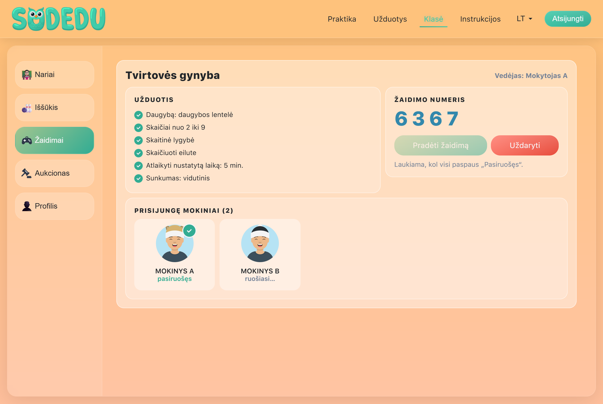
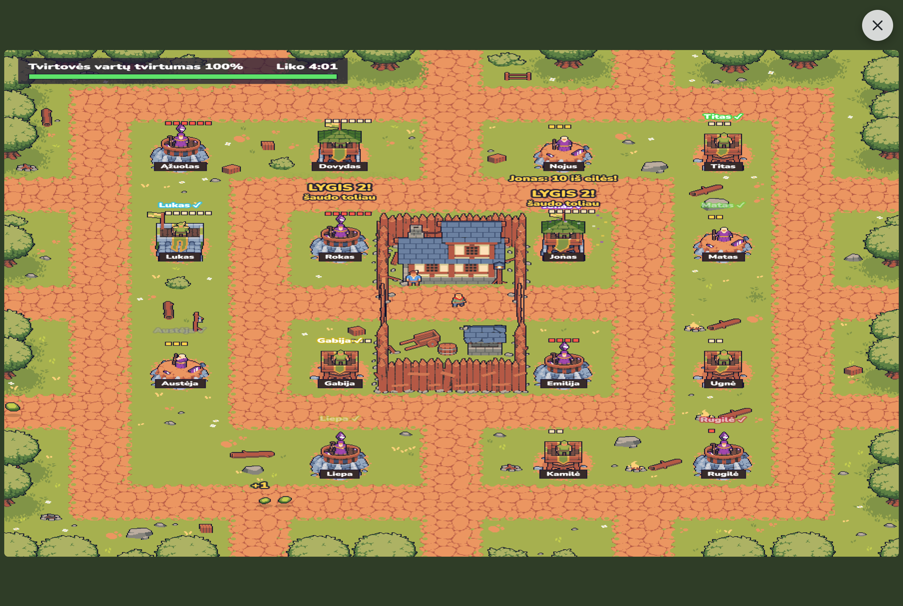
VAIDUOKLIS
Lietuvių kalbos žodžių žaidimas, lavinantis žodyną ir rašybą. Žaidėjai paeiliui prideda po vieną raidę: iš raidžių visada turi būti galima sudaryti ilgesnį tikrą žodį. Manantis, kad taip prasidedančio žodžio nėra ar ilgesnio nebebus, žaidėjas gali „Mesti iššūkį“ – tuomet žaidėjas, kuriam mestas iššūkis, turi pateikti ilgesnį žodį, prasidedantį tomis raidėmis. Kas suklysta, praranda gyvybę, o netekęs visų gyvybių žaidėjas tampa vaiduokliu 👻. Laimi paskutinis likęs žaidėjas. Visas taisykles galima rasti paspaudus klaustuko mygtuką (?) prie žaidimo.
- Žodžių tikrinimas: pateikti žodžiai tikrinami SUDEDU žodyne. Vardai, pavadinimai ir sutrumpintos žodžių formos neleidžiami – už juos prarandama gyvybė.
- Botai: žaidime gali dalyvauti kompiuterio valdomi varžovai (botai Kasparas, Deduokliukas, Baubas ir Slogutis; iki 4 vienoje grupėje). Botų žodynas (ribotas, vidutinis, platus arba turtingas) ir lygis (lengvas, vidutinis, sunkus) nustatomi „Botų nustatymuose“. Botų žodžiai parenkami pagal klasės žinių lygį (1–2 arba 3–4 klasių dažniausius žodžius).
- Kiti nustatymai: žaidėjo gyvybės (2, 3 arba 5) ir maksimalus ėjimo laikas (neribotas, 15 s, 30 s, 45 s arba 1 min.). Nespėjus per nustatytą laiką, prarandama gyvybė.
Mokiniai „Vaiduoklį“ gali žaisti dviem būdais:
- Žaisti prieš kompiuterį: mokinys žaidžia vienas su 1–4 botais.
- Žaisti su klasės draugais: mokinys sukuria laukiamąjį ir pasirenka didžiausią žaidėjų skaičių (2–6, įskaitant botus). Laukiamajame vedėjas gali keisti nustatymus, pridėti botų (mygtukas „+ Botas“) ir pašalinti žaidėjus. Kai visi pasiruošę – pradedama. Jei žaidimą sukūręs mokinys žaidimo metu išeina, žaidimas nesibaigia – jį toliau žaidžia kiti žaidėjai.
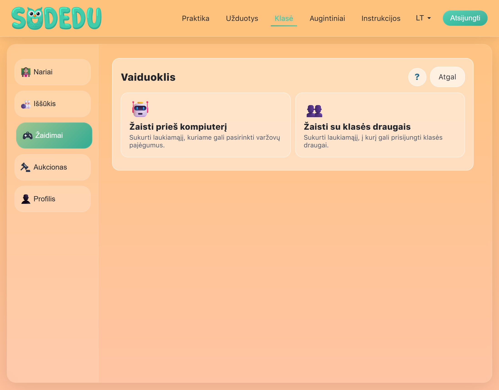
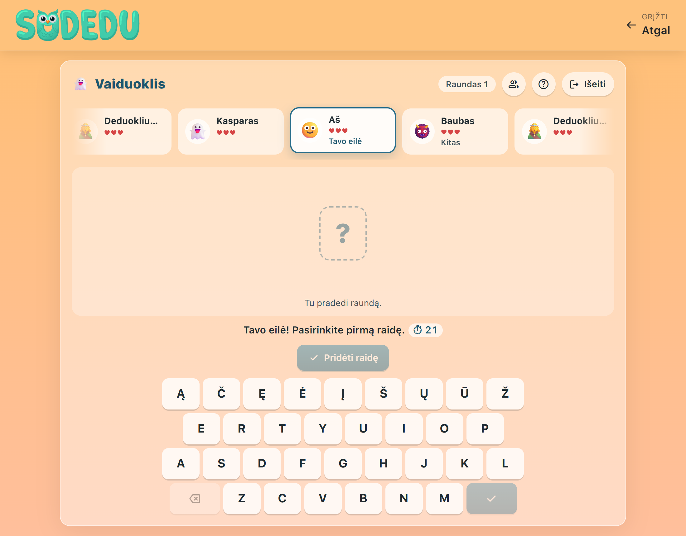
Mokytojai „Vaiduoklį“ gali vesti dviem būdais:
- Individualiuose prietaisuose: mokiniai žaidžia grupėmis savo įrenginiuose. Kuriant žaidimą pasirenkamas didžiausias žaidėjų skaičius grupėje (2–6, įskaitant botus) – kai grupės užsipildo, prisijungiantiems mokiniams automatiškai sukuriama nauja grupė. Laukiamajame mokytojas gali tempti mokinius ar botus iš vienos grupės į kitą (arba paspaudęs vardą pasirinkti grupę ar pašalinti žaidėją), pridėti grupių ir botų; mokiniai patys gali pereiti į kitą grupę, kurioje yra vietos. Grupė, kurioje yra tik vienas žaidėjas, pradėti negali.
- Žaidimo metu mokytojas stebi visas grupes viename ekrane: matomas kiekvienos grupės žodis, žaidėjai, jų gyvybės, ėjimo laikas ir kas vyksta (pvz., mestas iššūkis). Jei grupių daug, jos išdėstomos keliuose puslapiuose. Mokinius galima perkelti į kitą grupę arba pašalinti iš žaidimo ir žaidimo metu. Kai visos grupės baigia žaisti, parodomi kiekvienos grupės rezultatai ir žaidimą galima baigti.
- Išmaniojoje lentoje: visas žaidimas vyksta viename ekrane (pvz., išmaniojoje lentoje). Mokytojas pasirenka žaidžiančius mokinius (ir, jei nori, iki 4 botų), o mokiniai paeiliui prieina prie lentos ir prideda raides. Ekrane visada parodoma, kieno eilė.
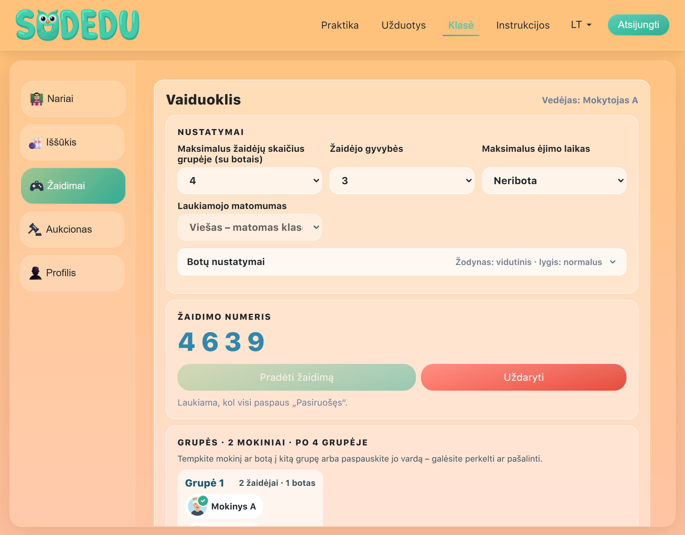
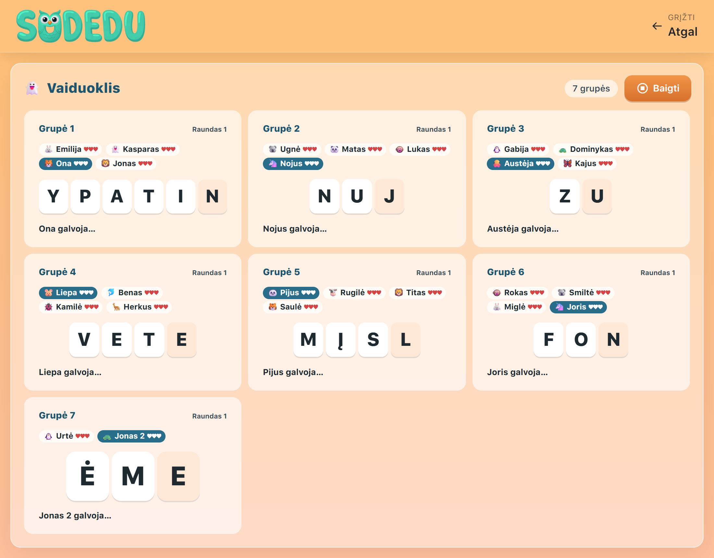
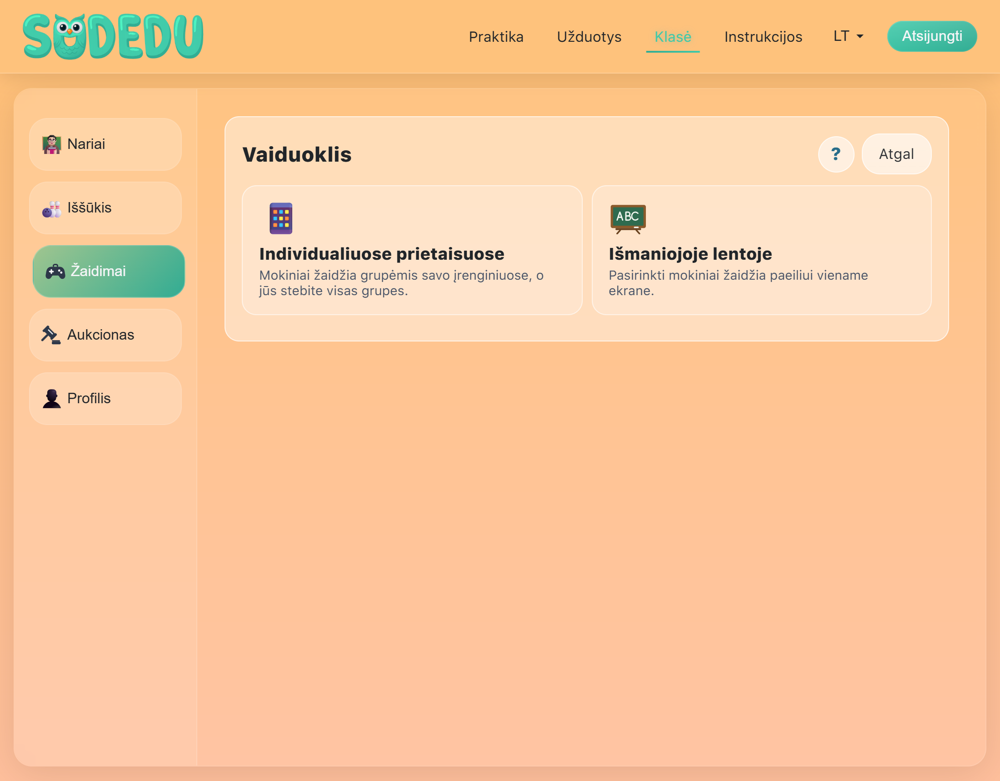
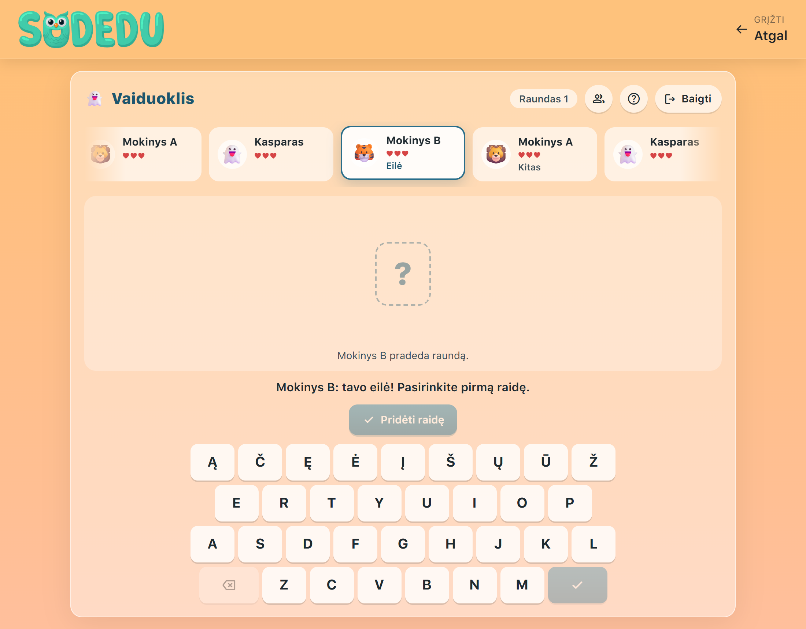
Aukcionas – tai puikus būdas perkelti virtualų SUDEDU pasaulį į realybę. Aukcione mokytojas gali siūlyti klasei įvairių prizų ar privilegijų, kurias mokiniai gali įsigyti už uždirbtas SUDEDU monetas (tas pačias, kurias naudoja „Augintiniai“ puslapyje, plačiau čia). Keli aukciono pavyzdžiai:
- Sėdėjimas su draugu – vieną pamoką, dieną ar net visą savaitę sėdėti šalia pasirinkto draugo;
- Dienos DJ – per pertraukas arba dailės ir technologijų pamokas parinkti foninę muziką (dainas patvirtina mokytojas);
- Diena be namų darbų – vieną pasirinktą dieną nedaryti namų darbų.
Pardavimai gali būti vykdomi dviem būdais:
- Nustatyta kaina: prizą/privilegiją gali nusipirkti kiekvienas mokinys, turintis pakankamai monetų, kol daiktų nepritrūksta (kiekis nuo 1 iki 100).
- Aukcionas: mokiniai stato monetas iki pasirinktos dienos pabaigos (ne vėliau kaip po 9 mėnesių). Nurodoma pradinė kaina ir kiek bus laimėtojų – laimi didžiausi statymai, o kiekvienas laimėtojas moka savo pastatytą sumą. Statant, monetos iškart paimamos ir automatiškai grąžinamos, jei kitas mokinys pastato daugiau. Laimėtojai paaiškėja kitą dieną po aukciono pabaigos.
Mokytojas aukciono skiltyje mato keturias dalis:
- Pasiūlymai: daiktų kūrimas („+ Naujas daiktas“: pavadinimas, aprašymas, pardavimo būdas, kaina ir kiekis), redagavimas ir trynimas. Aukcionuose matomi visi statymai. Kai aukcione jau yra statymų, galima keisti tik pavadinimą, aprašymą ir pabaigos datą. Ištrynus aukcioną, statę mokiniai atgauna savo monetas.
- Mokinių daiktai: kuris mokinys kokius daiktus turi ir iki kada jie galioja.
- Nustatymai: klasės taisyklės – kiek daiktų vienas mokinys gali turėti vienu metu (įskaitant laimimus aukcionus), keliuose aukcionuose vienu metu gali statyti ir kiek daiktų gali įsigyti per pasirinktą laikotarpį (savaitę, 2 savaites, 1–3 mėnesius, pusmetį ar mokslo metus).
- Žinutės: mokinių prašymai panaudoti įsigytus daiktus (mokytojas patvirtina, kad daiktas panaudotas, ir įrašas ištrinamas) bei pranešimai apie pasibaigusius aukcionus.
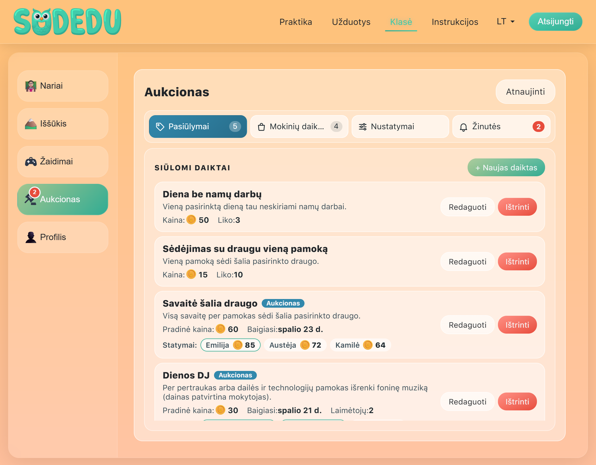
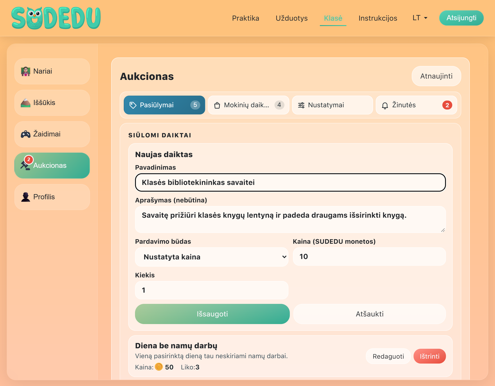
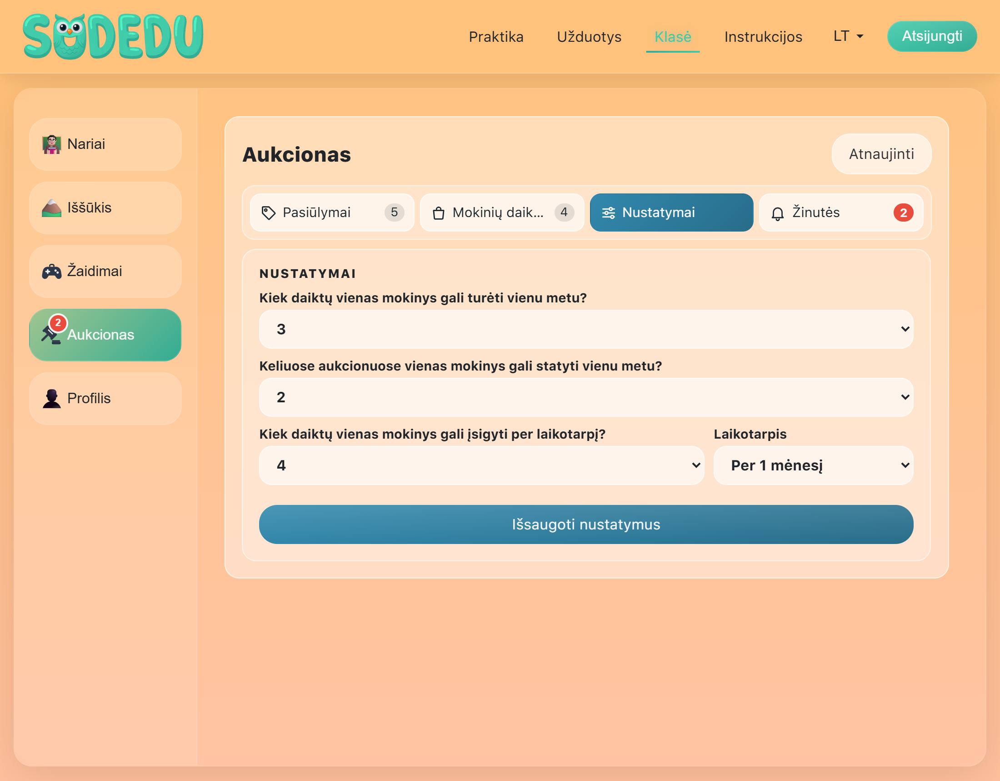
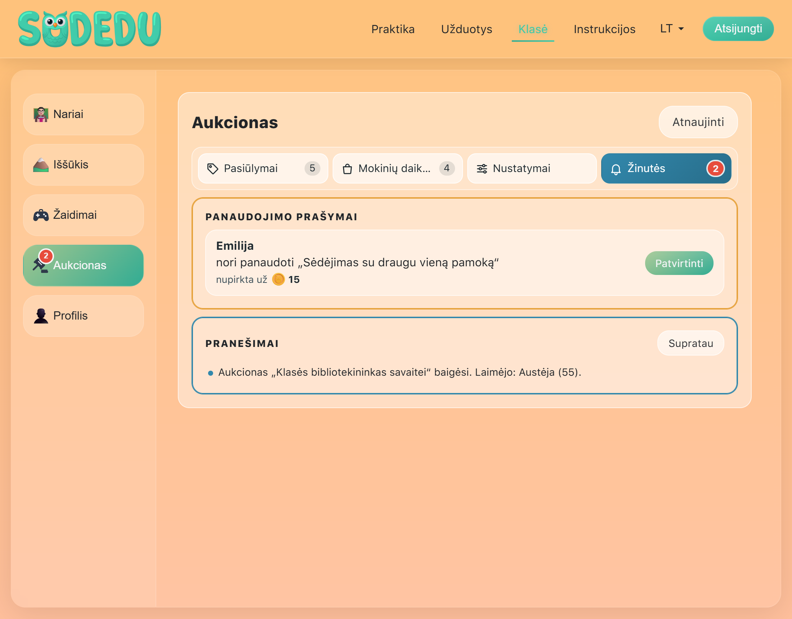
Mokiniai skilties viršuje mato, kiek turi SUDEDU monetų, ir gali:
- Pasiūlymai: pirkti daiktus („Pirkti“) arba statyti aukcionuose („Statyti“; nurodomas mažiausias galimas statymas). Jei pasiektas klasės apribojimas, tai nurodoma prie daiktų.
- Mano daiktai: peržiūrėti įsigytus daiktus ir juos panaudoti („Panaudoti“) – tuomet mokytojas gauna prašymą patvirtinti. Įsigyti daiktai galioja 12 mėnesių.
- Žinutės: pranešimai, pvz., kai kitas mokinys pastato daugiau (monetos grąžinamos), laimimas aukcionas ar mokytojas patvirtina, kad daiktas panaudotas.
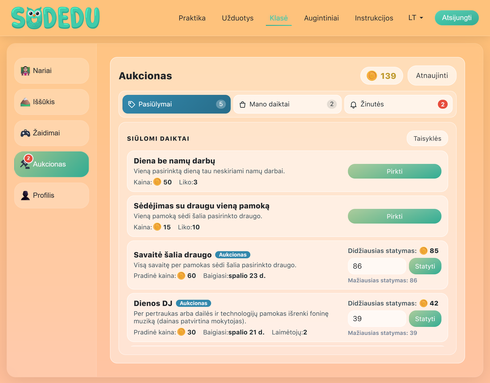
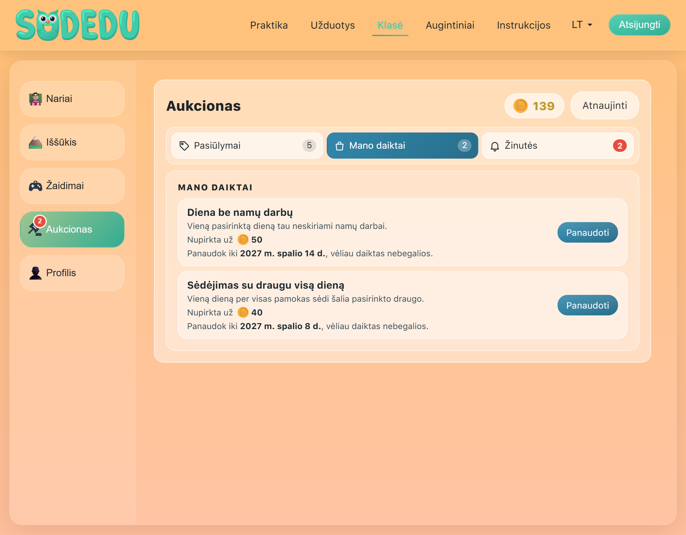
Šioje skiltyje mokiniai ir mokytojai gali rasti savo paskyros ID numerį bei pakeisti vartotojo vardą. Mokiniai gali pakeisti savo avataro – matomo mokytojui ir klasės draugams – išvaizdą, taip pat peržiūrėti savo klasę. Jei klasė nurodyta neteisingai, ją gali pakeisti mokytojas (mokiniams, besimokantiems pagal pritaikytą programą, nustatyta klasė gali neatitikti jų dabartinės klasės). Mokiniai, kurių paskyros nėra susietos su mokytoju, gali pakeisti savo klasę atsiuntę mums prašymą el. paštu sudedult@gmail.com.
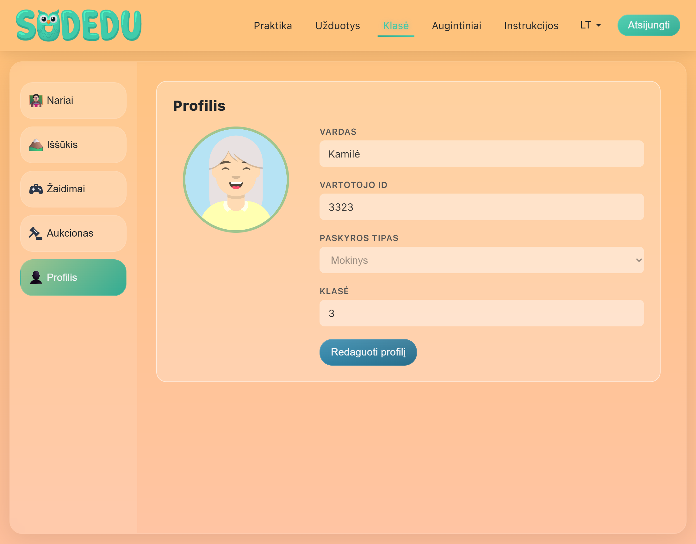
Puslapis „Augintiniai“ yra vieta, kur mokiniai gali prižiūrėti savo SUDEDU augintinius, planuoti bei dekoruoti augintinių namus ir išleisti uždirbtas SUDEDU monetas.
- Augintinio išlaikymas: maistas ir skanėstai reikalingi augintinių gerovei.
- Privalomieji mokesčiai: sąskaitų už elektrą ir vandenį apmokėjimas.
- Namų dekoravimas: baldai, dekoracijos ir pramogos augintiniams.
- Monetos uždirbamos atliekant matematikos arba lietuvių kalbos užduotis (nesvarbu, ar jos buvo užduotos mokytojo, ar pasirinktos savarankiškai).
- Prie užduoties atlikimo mygtuko yra nurodomas galimas uždarbis. Kai nustatomas klausimų kiekis,
uždarbis rodomas kaip maksimali potencialaus uždarbio suma (pvz.,
IKI
 6
– atsakius visus klausimus teisingai iš pirmo karto galima uždirbti 6 SUDEDU monetas). Užduotims, kurios atliekamos nustačius laiką
arba visoms gramatikos užduotims, šalia atlikimo mygtuko yra nurodomas uždarbis per kiekvieną teisingą atsakymą (pvz.,
x
0.71
– už kiekvieną iš pirmo karto teisingai atsakytą klausimą bus uždirbtos 0.71 SUDEDU monetos).
Matematikos ir gramatikos užduotyse monetos uždirbamos tik už iš pirmo karto teisingai atsakytus klausimus.
Teksto suvokimo užduotyse SUDEDU monetos gali būti uždirbamos ir padarius klaidų:
6
– atsakius visus klausimus teisingai iš pirmo karto galima uždirbti 6 SUDEDU monetas). Užduotims, kurios atliekamos nustačius laiką
arba visoms gramatikos užduotims, šalia atlikimo mygtuko yra nurodomas uždarbis per kiekvieną teisingą atsakymą (pvz.,
x
0.71
– už kiekvieną iš pirmo karto teisingai atsakytą klausimą bus uždirbtos 0.71 SUDEDU monetos).
Matematikos ir gramatikos užduotyse monetos uždirbamos tik už iš pirmo karto teisingai atsakytus klausimus.
Teksto suvokimo užduotyse SUDEDU monetos gali būti uždirbamos ir padarius klaidų:
- Lengvas lygis:
- 1 klaida – 50% monetų
- Vidutinis lygis:
- 1 klaida – 50% monetų
- 2 klaidos – 25% monetų
- Sunkus lygis:
- 1 klaida – 50% monetų
- 2 klaidos – 25% monetų
- 3 klaidos – 10% monetų
- Lengvas lygis:
- Uždarbis priklauso nuo užduoties ir mokinio klasės – atliekant užduotis, kurios pagal priešmokyklinio ugdymo programą yra per lengvos tos klasės mokiniams, uždirbama mažiau monetų arba jos neuždirbamos iš viso. Apibendrintas priešmokyklinio ugdymo gaires matematikos mokymui galite rasti čia, o lietuvių kalbos mokymui čia.
- Atliekant asmeninius iššūkius „Praktika“ puslapyje, mokiniai uždirba 10% daugiau monetų nei pasirinkę tą pačią užduotį savarankiškai (plačiau čia).
- Laimėję klasės savaitės iššūkį, mokiniai gauna papildomą kiekį SUDEDU monetų, priklausomai nuo to, kurią vietą užėmė ir kiek mokinių dalijasi prizą (plačiau čia).
Šioje skiltyje mokiniai gali rasti savo augintinius, jų namus ir informaciją apie augintinių būklę.
-
- Sąveikauti su daiktais ir augintiniais galima paspaudus pelytės ar nešiojamojo kompiuterio jutiklinio kilimėlio kairįjį mygtuką.
- Judinti daiktus galima ant jų paspaudus kairįjį mygtuką ir palaikius, kol atsiranda žalios, geltonos ar raudonos spalvos žymės, nurodančios, kur daiktas gali būti padėtas. Augintinį galima judinti iš karto.
- Judinti kambarį galima bet kur ant jo paspaudus ir laikant pelytės vidurinį mygtuką. Naudojantis nešiojamojo kompiuterio jutikliniu kilimėliu, judinti kambarį galima paspaudus ir laikant klaviatūros tarpo mygtuką („spacebar“).
- Padidinti ar sumažinti kambario vaizdą galima naudojantis viduriniu pelytės mygtuku arba judinant du pirštus artyn ar tolyn vienas nuo kito ant nešiojamojo kompiuterio jutiklinio kilimėlio.
- Sąveikauti su daiktais ir augintiniais galima palietus juos vienu pirštu.
- Judinti daiktus galima juos palietus vienu pirštu ir palaikius, kol atsiranda žalios, geltonos ar raudonos spalvos žymės, nurodančios, kur daiktas gali būti padėtas. Augintinį galima judinti iš karto.
- Judinti kambarį galima bet kur jį palietus dviem pirštais ir judinant juos kartu ant prietaiso ekrano.
- Padidinti ar sumažinti kambario vaizdą galima judinant du pirštus artyn ar tolyn vienas nuo kito ant prietaiso ekrano.
Papildomi nustatymai- paspaudus šį mygtuką, kambario priartinimo lygis yra užfiksuojamas ir nebereaguoja į artinimo/tolinimo gestus (patogu judinant kambario vaizdą prietaisuose su liečiamuoju ekranu).
- paspaudus šį mygtuką, kambario vaizdas išsiplečia per didžiąją dalį prietaiso ekrano (patogu, kai mokinys keičia kambario dizainą ar žaidžia su augintiniais).
- Augintinio būklė
-
Kiekvieno augintinio būklė gali būti peržiūrėta paspaudus augintinio vardo mygtuką „Namai“ skiltyje (
).
Norėdami, kad jų augintiniai būtų laimingi, mokiniai turi pasirūpinti trimis jų poreikiais:
Maistas
- Pilnai pamaitintas augintinis visiškai išalksta per 48 valandas.
- Skirtingi maisto produktai gali skirtingai pakelti augintinio sotumo lygį. Ši informacija nurodoma maisto aprašyme (pvz., x5 padidina augintinio sotumą 5 vienetais).
- Augintinio sotumo lygis maksimaliai gali pakilti iki 10. Bet koks perviršis yra nurašomas.
-
Maitinimas: Augintinį galima pamaitinti dviem būdais:
- Paspaudus mygtuką „Naudoti“ šalia maisto produkto „Augintiniai“ skiltyje ir pasirinkus augintinio dubenėlį.
- Paspaudus ant maisto dubenėlio ir pasirinkus maisto produktą atsiradusiame valdymo langelyje.
Vanduo- Pilnai pagirdytas augintinis visiškai ištrokšta per 48 valandas.
- Pagirdžius augintinį, jo atsigėrimo lygis bus pilnai atstatytas iki 10 vienetų. Bet koks perviršis yra nurašomas.
- Girdymas: augintinį galima pagirdyti paspaudus ant tinkamo vandens dubenėlio ir paspaudus mygtuką „Pripildyti“ atsiradusiame vandens dubenėlio valdymo langelyje. Norint pripildyti vandens dubenėlį, reikia būti susimokėjus vandens mokestį „Mokesčiai“ skiltyje.
Dėmesys- Kad augintiniai jaustųsi mylimi, jiems reikia rodyti dėmesį.
- Augintiniams parodytas dėmesys visiškai išblėsta per 48 valandas.
- Augintiniams rodoma meilė matuojama vienetais, kurie gali pakilti iki 10. Bet koks perviršis yra nurašomas.
-
Dėmesio rodymas: augintiniui galima parodyti dėmesį keliais būdais:
-
Skaniukai. Skirtingi skaniukai gali skirtingai pakelti augintiniui
rodomos meilės lygį. Ši informacija nurodoma skaniuko aprašyme (pvz., x5 padidina
augintiniui rodomos meilės lygį 5 vienetais). Augintiniui skaniukų galima duoti dviem būdais:
- Paspaudus mygtuką „Naudoti“ šalia skaniuko „Augintiniai“ skiltyje ir pasirinkus norimą augintinį.
- Paspaudus ant augintinio ir pasirinkus norimą skaniuką atsiradusiame augintinio valdymo langelyje.
- Pramogos: augintiniams galima nupirkti įvairių daiktų, skirtų pramogoms, pavyzdžiui, muzikos grotuvą ar vonią maudynėms. Šie daiktai reguliariai didina augintiniui rodomos meilės lygį. Susijusi informacija nurodoma daikto, skirto pramogoms, aprašyme (pvz., x2 per dieną – daiktas per dieną augintiniams suteikia 2 rodomos meilės vienetus. Tai reiškia, kad augintiniui rodomos meilės lygis negali nukristi žemiau 2 vienetų).
-
Skaniukai. Skirtingi skaniukai gali skirtingai pakelti augintiniui
rodomos meilės lygį. Ši informacija nurodoma skaniuko aprašyme (pvz., x5 padidina
augintiniui rodomos meilės lygį 5 vienetais). Augintiniui skaniukų galima duoti dviem būdais:
- Mygtukas „KARTU“
-
Šis mygtukas leidžia mokiniui pasiimti augintinį kartu į užduotis (mygtukas yra įjungtas, kai yra mėlynos spalvos
ir neturi užrašo „KARTU“).
- Augintinis atsiras lango viršuje mokiniui atliekant užduotis.
- Vienu metu tik vienas augintinis gali būti pasiimtas kartu.
- Augintiniai atsisako kartu su mokiniu eiti į užduotis, jei augintinis yra nelaimingas, pavyzdžiui, jei jis alkanas, ištroškęs ar jaučiasi nemylimas. Jei augintinis liūdnas, tai taip pat bus pažymima raudonu skrituliu šalia augintinio vardo mygtuko „Namai“ skiltyje ( ).
- Namų planavimas
-
Kambarių pristatymas
- Mokiniai gali išplėsti savo augintinio namus paspaudę mygtuką.
Daiktų pridėjimas-
Daiktai į namus gali būti pridėti dviem būdais:
- „Baldai“ skiltyje paspaudus daikto, kurį norima pridėti į namus, „Naudoti“ mygtuką.
- „Namai“ skiltyje įjungus redagavimo režimą paspaudžiant „Perstatyti“ mygtuką ir daiktų sąraše atsirandančiame kairėje ekrano pusėje (arba šoniniame meniu prietaisuose su mažesniais ekranais) paspaudus daikto, kurį norima pridėti į namus, „Naudoti“ mygtuką.
- Jei kambaryje šiam daiktui nepakanka vietos, daiktas nebus pridėtas ir mokinys sulauks tai nurodančios žinutės.
- Norint, kad namų pakeitimai būtų išsaugoti, būtina paspausti „Išsaugoti“ mygtuką.
Daiktų perstatymas- Norint perstatyti daiktus, reikia įjungti redagavimo režimą paspaudžiant „Perstatyti“ mygtuką. Tuomet daiktai gali būti judinami ant jų paspaudus (palietus) ir palaikius, kol atsiranda žalios, geltonos ar raudonos spalvos žymės, nurodančios, kur daiktas gali būti padėtas. Raudona spalva reiškia, kad jokia daikto dalis negali užimti tos erdvės. Žalia nurodo, kur gali būti padėta daikto apačia. Geltona žymi erdvę, kurią daiktas gali užimti, bet tik tada, kai jo apačia yra žaliai pažymėtoje zonoje.
- Jei bus bandoma padėti daiktą ten, kur jis netelpa, daiktas bus grąžintas į savo pradinę padėtį.
- Norint, kad namų pakeitimai būtų išsaugoti, būtina paspausti „Išsaugoti“ mygtuką.
Daiktų šalinimas- Norint pašalinti daiktus iš namų, reikia įjungti redagavimo režimą paspaudžiant „Perstatyti“ mygtuką. Daiktai gali būti pažymėti ištrynimui ant jų paspaudžiant – aplink daiktą atsiras raudonas rėmas. Paspaudus ant pažymėto daikto vėl, trynimo žymė bus nuimta. Kai visi daiktai, kuriuos norima ištrinti, yra pažymėti, tereikia paspausti „Trinti“ mygtuką.
- Norint, kad namų pakeitimai būtų išsaugoti, būtina paspausti „Išsaugoti“ mygtuką.
- Daiktai, pašalinti iš namų, vis tiek priklauso mokiniui ir gali būti vėl naudojami vėliau.
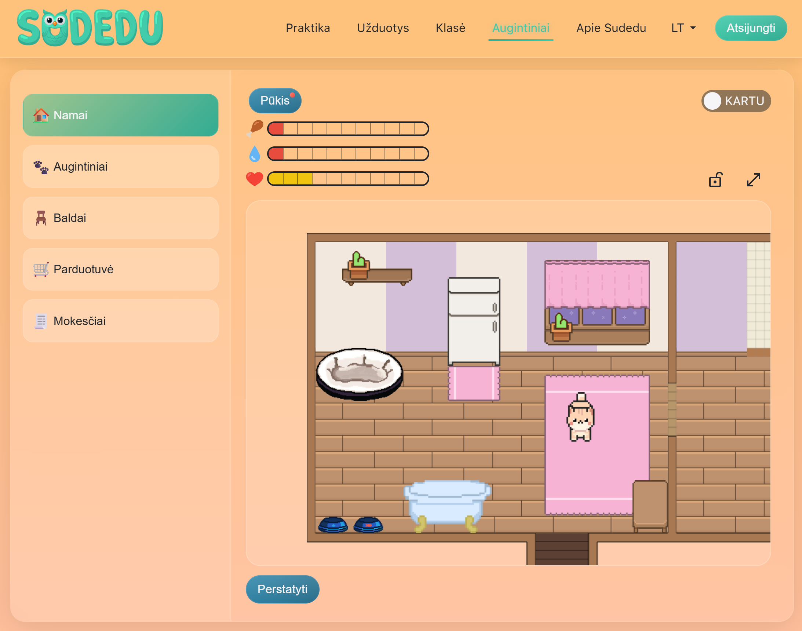
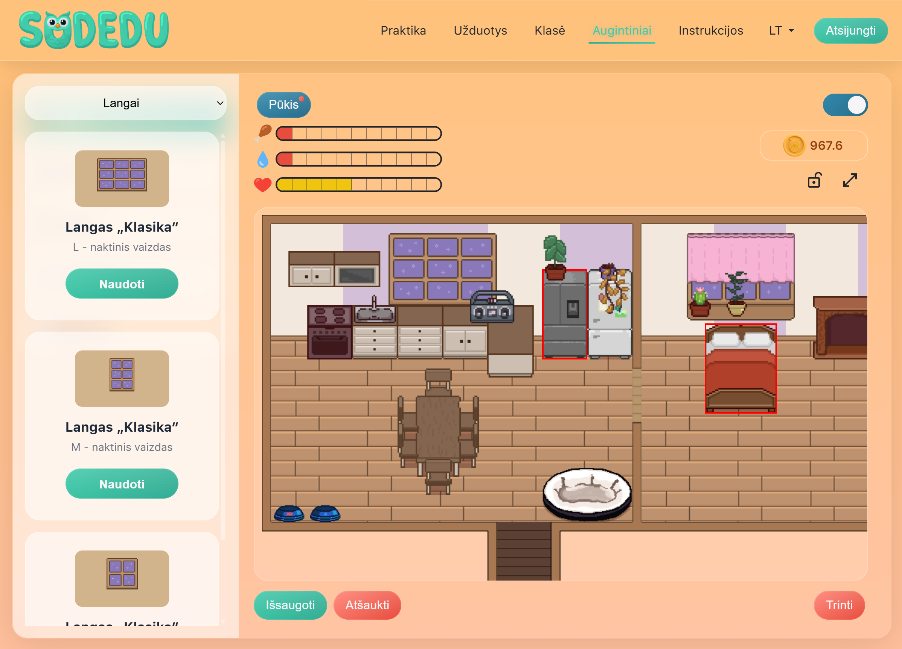
Šioje skiltyje galima rasti visus turimus augintinių reikmenis, tokius kaip maistas ir skaniukai, bei pakeisti augintinių išvaizdą (reikmenis ir augintinių išvaizdos paketus galima nusipirkti parduotuvėje).
- Paspaudus ant mygtuko su augintinio nuotrauka, rodomi visi pasirinkimai, tinkami tam augintiniui (aktyvus mygtukas pažymėtas mėlynos spalvos fonu).
- Augintinį galima atiduoti į gyvūnėlių namus paspaudus „Atiduoti“ mygtuką virš augintinio nuotraukos – susigrąžinti atiduoto augintinio neįmanoma!
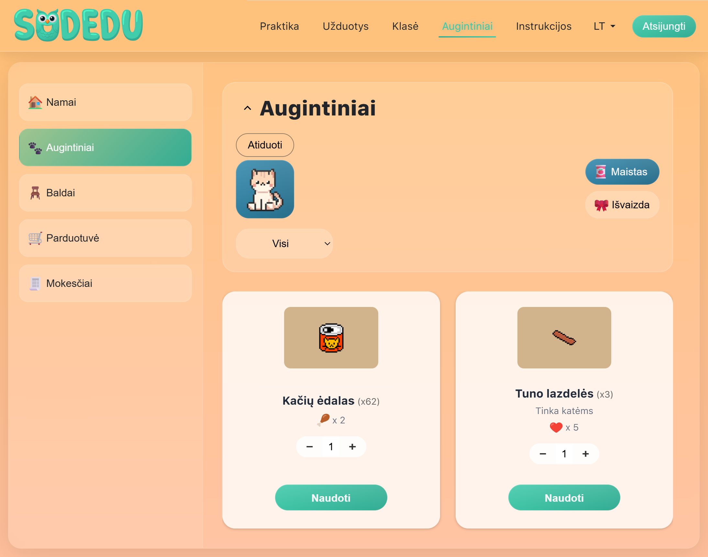
Šioje skiltyje mokiniai gali matyti visus įsigytus namų daiktus.
- Įjungus filtrą „NENAUD.“ (nenaudojama), sąraše bus rodomi tik tie daiktai, kurie dar nebuvo panaudoti arba gali būti naudojami neribotą kiekį.
- Paspaudus mygtuką „Naudoti“, daiktas bus pridėtas į mokinio namus, jei juose yra pakankamai vietos (plačiau čia).
-
Viršutiniame dešiniajame nenaudojamo daikto nuotraukos kampe galima rasti
mygtuką. Jį paspaudus, galima parduoti nenaudojamą daiktą už pusę jo originalios kainos.
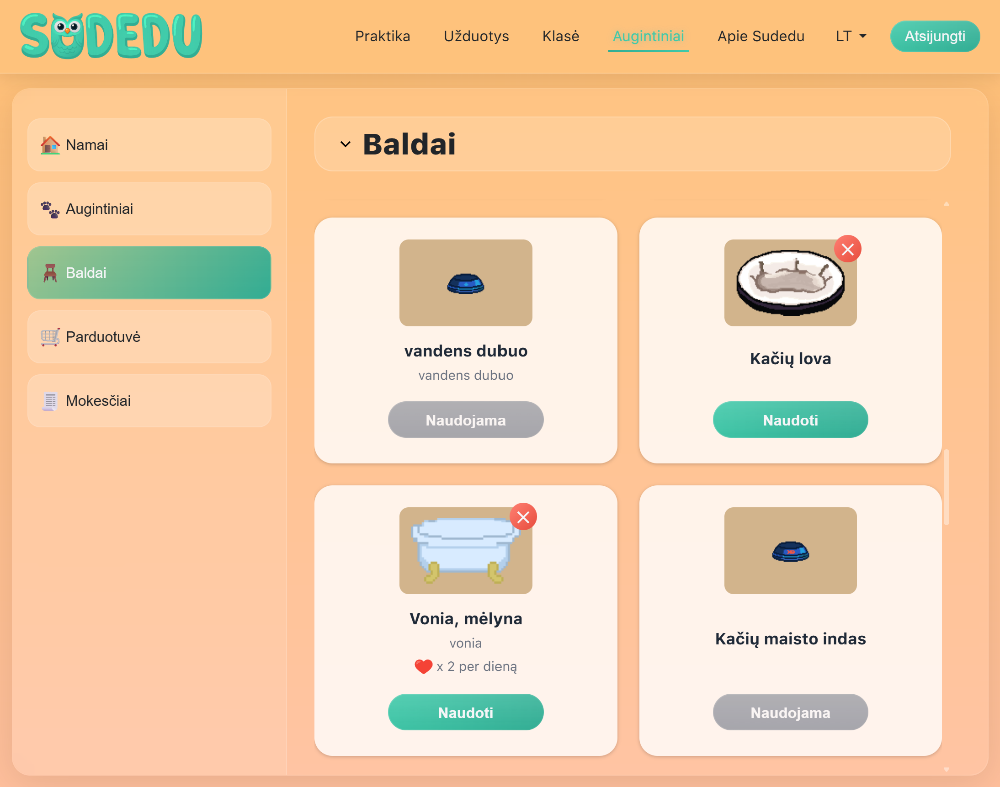
Šioje skiltyje galima nusipirkti viską, ko reikia augintinių priežiūrai bei namų dekoravimui.
-
Parduotuvė suskirstyta į tris skyrius:
- Reikmenys: čia galima įsigyti maisto bei skaniukų augintiniams ir augintinių išvaizdos paketų. Paspaudus ant mygtuko su augintinio nuotrauka, rodomi visi produktai, tinkami tam augintiniui (aktyvus mygtukas pažymėtas mėlynos spalvos fonu).
- Baldai: čia galima įsigyti daiktų, reikalingų augintinių priežiūrai arba namų dekoravimui. Jei mokiniai nori pamatyti, kaip daiktas atrodytų jų virtualiuose namuose prieš jį pirkdami, tai gali padaryti paspaudę mygtuką viršutiniame dešiniajame daikto nuotraukos kampe.
- Gyvūnėliai: čia galima įsigyti skirtingų augintinių. Kol kas prekyboje yra tik vienas gyvūnėlis.
- Parduotuvėje įjungus filtrą „NETURIU“, sąraše bus rodomos tik dar neįsigytos prekės arba prekės, kurios gali būti perkamos daug kartų.
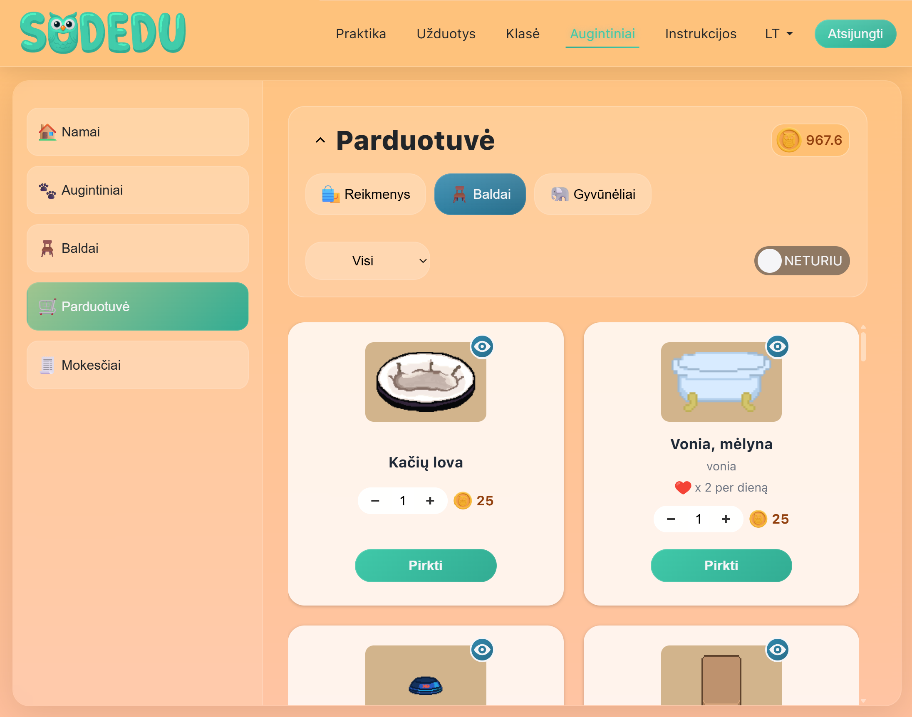
Šioje skiltyje galima rasti sąskaitas už elektrą ir vandenį ir jas sumokėti.
- Sąskaitos mokamos kas 2 savaites.
-
Atėjus sąskaitos mokėjimo laikui, mokiniai turi 3 dienas jas sumokėti. Jei yra laukiama mokėjimų, šalia
skilties „Mokesčiai“ mygtuko ikonos bus rodomas geltonas skritulys (
 ).
).
- Norint sumokėti už patarnavimus, tereikia paspausti „Mokėti“ mygtuką šalia atitinkamos sąskaitos.
-
Nesumokėjus sąskaitų už elektrą ar vandenį, šios paslaugos bus išjungtos. Jei yra neapmokėtų sąskaitų,
šalia skilties „Mokesčiai“ mygtuko ikonos bus rodomas raudonas skritulys (
).
- Vanduo reikalingas augintiniams girdyti bei prausti. Elektra reikalinga šviesai namuose ir elektros prietaisams, tokiems kaip šaldytuvas.
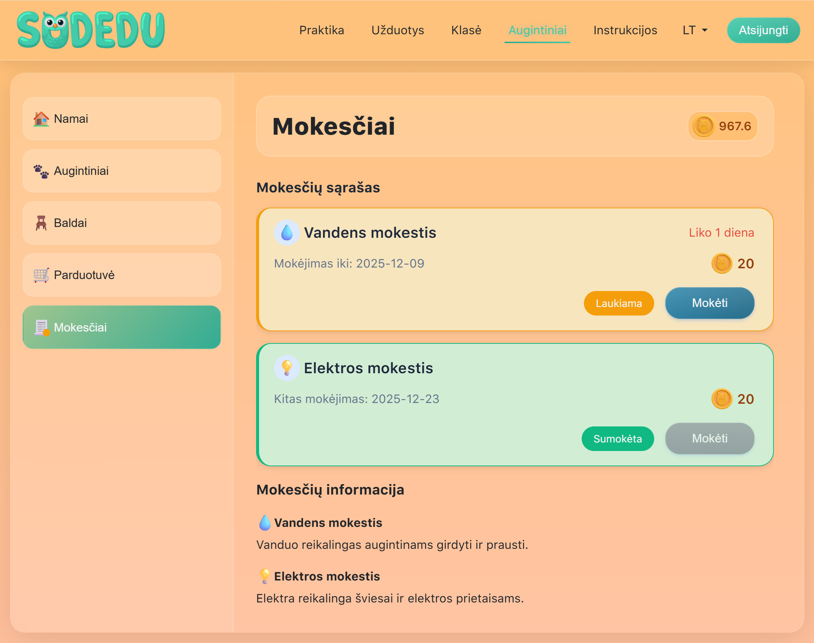
Žemiau pateikiamas SUDEDU matematikos mokymosi turinys – tai yra dalis pradinio ugdymo matematikos programoje nurodyto mokymo(si) turinio.
- Sudėtis, atimtis, sudėtis ir atimtis iki 10*
- Sudėtis, atimtis, sudėtis ir atimtis iki 20 (vienaženklių skaičių pergrupuojant skaičių skyrius)
- Sudėtis, atimtis, sudėtis ir atimtis iki 100 (dviženklio ir vienaženklio skaičių pergrupuojant skaičių skyrius)
- Sudėtis, atimtis, sudėtis ir atimtis iki 100 (dviženklių skaičių nepergrupuojant skaičių skyrių)
- Skaitinė lygybė su nežinomuoju (dėmeniu, turiniu, atėminiu)
- Sudėtis, atimtis, sudėtis ir atimtis iki 100 (pergrupuojant skaičių skyrius)
- Sudėtis, atimtis, sudėtis ir atimtis iki 1 000 (pergrupuojant ir nepergrupuojant skaičių skyrius)
- 1–9 daugybos lentelė (galimybė pasirinkti aktualų turinį)
- Dalyba (iš 1–9 daugybos lentelės)
- Skaitinė lygybė su nežinomuoju (dėmeniu, turiniu, atėminiu, dauginamuoju, daliniu, dalikliu)
- Sudėtis, atimtis, sudėtis ir atimtis iki 10 000 (pergrupuojant ir nepergrupuojant skaičių skyrius)
- Daugyba (dviženklio, triženklio ir keturženklio skaičiaus iš vienaženklio)
- Dalyba (iš daugybos lentelės, dviženklio, triženklio ir keturženklio skaičiaus iš vienaženklio, įskaitant dalybą su liekana)
- Daugyba ir dalyba su pilnas dešimtis, šimtus turinčiais skaičiais
- Skaitinė lygybė su nežinomuoju (dėmeniu, turiniu, atėminiu, dauginamuoju, daliniu, dalikliu)
- Sudėtis, atimtis, sudėtis ir atimtis iki 1 000 000 (pergrupuojant ir nepergrupuojant skaičių skyrius)
- Daugyba (daugiaženklių skaičių iš dviženklio, *daugiaženklių skaičių iš triženklio)
- Dalyba (daugiaženklių skaičių iš vienaženklio, *daugiaženklių skaičių iš dviženklio)
- Skaitinė lygybė su nežinomuoju (dėmeniu, turiniu, atėminiu, dauginamuoju, daliniu, dalikliu)
SUDEDU platforma pritaikyta patogiam naudojimuisi prietaisuose su mažesniais ekranais. Matematikos užduotyse, skaičiuojant stulpeliu ar kampu, atlikimo mechanika leidžia visuomet matyti svarbiausią informaciją be reikiamybės nuolat judinti ekraną aukštyn ir žemyn.
- Pasirinkti laukeliai yra sucentruojami kuo arčiau ekrano vidurio.
- Paspaudus mygtuką „Tikrinti“, laukeliai su klaidomis yra automatiškai pasirinkti ir sucentruojami.
- Dauginant stulpeliu mažesniuose ekranuose, kai mokiniui reikia sudėti tarpinius skaičiavimus, kad gautų galutinį atsakymą, dauginamieji yra paslepiami, kad laukeliai su tarpiniais atsakymais būtų lengvai matomi bet kokio dydžio ekrane.
- Dalinant kampu mažesniuose ekranuose, dalinys, daliklis ir galutinio atsakymo laukelis yra visuomet matomi, kad mokiniui būtų lengviau nukelti skaičius.

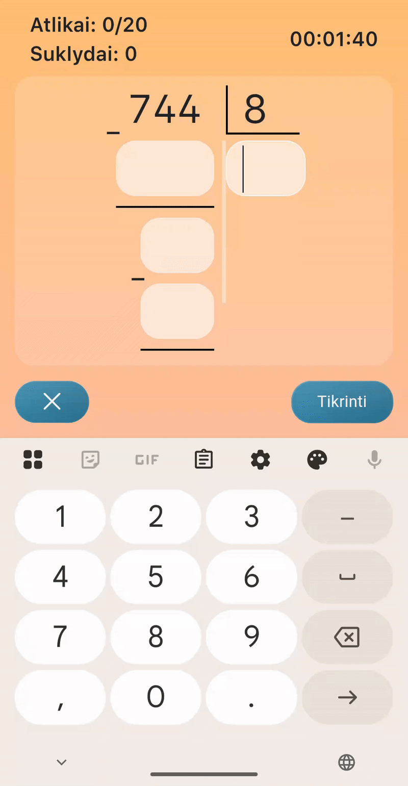
Skaitymo supratimas šiandien itin svarbus, nes jis suteikia galimybę atsirinkti ir kritiškai vertinti gausią informaciją, padeda orientuotis informacijos sraute bei išskirti patikimus šaltinius, kad galėtume priimti pagrįstus sprendimus.
- Turinio komponavimas – teksto dėliojimas iš pabirusių sakinių
- Struktūros išdėstymas – teksto dėliojimas iš pabirusių pastraipų: pradžia, įvykio raida, pabaiga
Teksto supratimo užduotys skirstomos pagal klasę (1–2 klasės arba 3–4 klasės) ir 3 sudėtingumo lygius (lengvas, vidutinis, sunkus). Kiekvienas lygis taip pat gali būti pasunkintas pridedant distraktorių*.
* Distraktorius – tai sakinys arba pastraipa dėliojamame tekste, kurie atitinka teksto temą, bet netinka pagal kontekstą, prasmę.
Po trijų nesėkmingų bandymų siūloma pirmoji pagalba – pateikiamas trečdalis tinkama tvarka sudėlioto teksto. Mokinys gali pasirinkti, ar nori naudotis pagalba – ji neprivaloma.
Norint pasinaudoti antrąja pagalba reikia būti išnaudojus pirmąją pagalbą ir dar tris kartus pabandyti atlikti užduotį. Tuomet bus pateikti jau du trečdaliai tinkama tvarka sudėlioto teksto.
Trečiąja pagalba galima naudotis tik tuomet, kai išnaudotos pirmoji ir antroji pagalbos bei atlikti dar trys nesėkmingi bandymai. Tuomet mokiniui pateikiamas jau visas teisingai sudėliotas tekstas.
SUDEDU platforma pritaikyta patogiam naudojimuisi prietaisuose su mažesniais ekranais. Teksto suvokimo užduotyse pabirę sakiniai/pastraipos yra šoniniame meniu, kuris gali būti atidarytas ir uždarytas paspaudus mygtuką su rodykle (). Paspaudus (palietus) ir palaikius norimą sakinį, šoninis meniu automatiškai užsidaro ir mokiniai gali nukelti pasirinktą sakinį, kur nori. Paleidus sakinį bet kur kitur nei laukeliuose teksto dėliojimui, sakinys grįš į sąrašą šoniniame meniu.
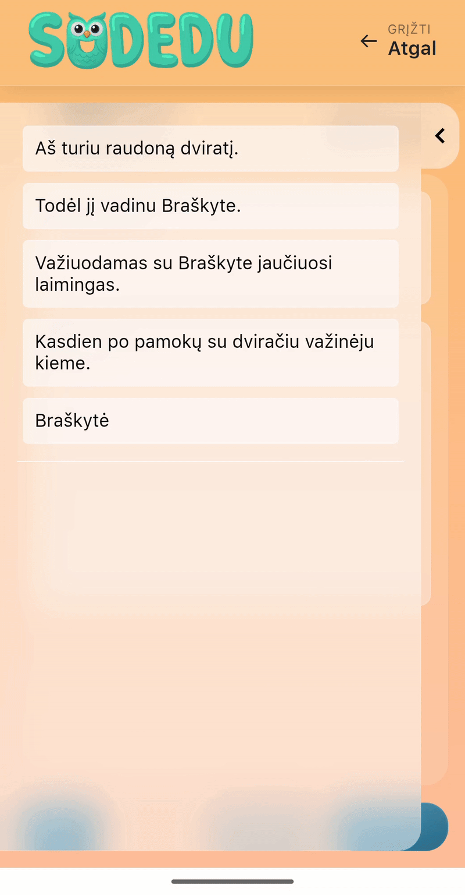
- Žodžio pabaiga:
- Daiktavardžių vienaskaitos galininkas (ką vieną?).
- Daiktavardžių vienaskaitos vietininkas (kur?) – antros klasės mokinių prašoma įrašyti pilną galūnę, pirmos – paskutinę „e“ raidę.
- Daiktavardžių daugiskaitos kilmininkas (ko daug?).
- Įsidėmėtinos rašybos žodžiai
- Panašiai skambančios priebalsės (k–g, p–b, t–d, ž–š, z–s) be priebalsių supanašėjimo
- H–CH–F (žodžiai su šiomis priebalsėmis)
- Minkštumo ženklas (ne prieš dvibalsius)
- Balsių poros (e–ė, i–y, u–ū)
- Dvibalsiai (be minkštumo ženklo)
Galima pasirinkti retesnius arba dažnesnius atvejus:
- Retesni atvejai: maksimalus žodžių su nežinomomis raidėmis skaičius yra tris kartus mažesnis nei žodžių skaičius sakinyje (pvz., šešių žodžių sakinyje gali būti du žodžiai su nežinomomis raidėmis).
- Dažnesni atvejai: kiekvienas žodis sakinyje gali turėti nežinomą raidę.
- Žodžio pabaiga: klausimai, padedantys nustatyti žodžio galūnę (pvz., „ką vieną?“)
- Įsidėmėtina rašyba: keli galimi atsakymo variantai (pvz., „e|ę|ė|ia“)
- Panašiai skambančios priebalsės: panašiai skambančių priebalsių pora (pvz., „t|d“) – rodoma visą laiką
- H–CH–F: galimi atsakymų variantai („h|ch|f“)
- Minkštumo ženklas: keli galimi atsakymo variantai (pvz., „u|iu|ū|iū“)
- Balsių poros: balsių pora (pvz., „i|y“)
- Dvibalsiai: visi dvibalsiai („ai|au|ei|ie|ui|uo“)
- Žodžio pabaiga (daiktavardžio, būdvardžio, prieveiksmio, veiksmažodžio)
- Įsidėmėtinos rašybos žodžiai
- Sudurtiniai žodžiai
- Priebalsių supanašėjimas
- Dvibalsiai (su ir be minkštumo ženklo)
- Mišrieji dvigarsiai (su ir be minkštumo ženklo)
- Priešdėliai („iš-“, „į-“, „už-“, „at-“, „ap-“)
Rašybos užduotyse galima pasirinkti lengvesnes arba sunkesnes žodžių su nežinomomis pabaigomis kombinacijas:
- Lengvesnės kombinacijos: tik vienas iš greta esančių daiktavardžių/būdvardžių gali būti pateikiamas su trūkstama pabaiga.
- Sunkesnės kombinacijos: gali būti pateikta užduočių, reikalaujančių įrašyti gretimų daiktavardžių/būdvardžių pabaigas.
ORIGINALUS SAKINYS: „Gilioje baloje gyveno vėžliukas.“
LENGVESNĖS KOMBINACIJOS: „Gil__ baloje gyven__ vėžliukas.“ ARBA „Gilioje bal__ gyven__ vėžliukas.“
SUNKESNĖS KOMBINACIJOS: „Gil__ bal__ gyven__ vėžliukas.“
Galima pasirinkti retesnius arba dažnesnius atvejus:
- Retesni atvejai: maksimalus žodžių su nežinomomis raidėmis skaičius yra tris kartus mažesnis nei žodžių skaičius sakinyje (pvz., šešių žodžių sakinyje gali būti du žodžiai su nežinomomis raidėmis).
- Dažnesni atvejai: kiekvienas žodis sakinyje gali turėti nežinomą raidę.
- Žodžio pabaiga:
Pateikiama žodžio morfologinė informacija (pvz., „dkt., N., vns., mot.g.“).
Gramatinių pažymų žodynas:
- dkt.: daiktavardis
- tikr.dkt.: tikrinis daiktavardis
- bdv.: būdvardis
- vksm.: veiksmažodis
- prv.: prieveiksmis
- vns.: vienaskaita
- dgs.: daugiskaita
- Ia.: pirmas asmuo
- IIa.: antras asmuo
- IIIa.: trečias asmuo
- es.l.: esamasis laikas
- būt.k.l.: būtasis kartinis laikas
- būt.d.l.: būtasis dažninis laikas
- būs.l.: būsimasis laikas
- vyr.g.: vyriškoji giminė
- mot.g.: moteriškoji giminė
- V.: vardininkas
- K.: kilmininkas
- N.: naudininkas
- G.: galininkas
- Įn.: įnagininkas
- Vt.: vietininkas
- Š.: šauksmininkas
Kadangi kompiuteriai nesupranta konteksto, tik originaliame tekste numatytos galūnės bus užskaitytos kaip teisingos. Tais atvejais, kai keli galūnių variantai yra gramatiškai teisingi, atsakymą, kuris bus priimtas kaip teisingas, galima išsiaiškinti naudojantis pagalba. Tokių atvejų pavyzdžius galite rasti žemiau.-
Pavyzdys: „Gelton__ (bdv.,V.,vns.,vyr.g.) ir raudon__ (bdv.,V.,vns.,vyr.g.) obuoliai guli ant stalo.“Šiuo atveju, ir pabaiga „-as“ („Geltonas ir raudonas obuoliai guli ant stalo.“), ir „-i“ („Geltoni ir raudoni obuoliai guli ant stalo.“) gramatiškai būtų teisingos. Naudojantis pagalba, galima nustatyti, kad originaliame tekste šie žodžiai su nežinomomis galūnėmis yra vienaskaitiniai („vns.“), todėl teisingas atsakymas abiem žodžiams yra „-as“.
-
Pavyzdys: „Mokytoj__ (dkt.,V.,vns.,vyr.g.) padėjo knygą ant stalo.“Šiuo atveju, žodis su nežinoma galūne gramatiškai gali būti ir vyriškosios, ir moteriškosios giminės. Naudojantis pagalba, galima nustatyti, kad žodis yra vyriškosios giminės („vyr.g.“), tad atsakymas, kuris bus priimtas kaip teisingas, yra „Mokytojas“, ne „Mokytoja“.
-
Pavyzdys: „Tebenešioj__ (vksm.,es.l.,vns.,Ia.) tavo dovanotas apyrankes su savimi.“Šiuo atveju pagalba nurodo, kad teisingas atsakymas, kuris bus užskaitytas, yra esamojo laiko („es.l.“) vienaskaitos („vns.“) pirmo asmens („Ia.“) forma „Tebenešioju“, o ne kiti gramatiškai teisingi variantai, kaip „Tebenešiojau“, „Tebenešiojame“, „Tebenešiojo“.
- Įsidėmėtinos rašybos žodžiai: keli galimi atsakymo variantai (pvz., „e|ę|ė|ia“)
- Sudurtiniai žodžiai: keli galimi atsakymo variantai (pvz., „a|ą|ia|e|ė“)
- Priebalsių supanašėjimas: priebalsių pora (pvz., „ž|š“)
- Dvibalsiai: nurodoma, kad atsakymas yra dvibalsis, galimai su minkštumo ženklu – „i?dvib.“
- Mišrieji dvigarsiai: nurodoma, kad atsakymas yra mišrusis dvigarsis, galimai su minkštumo ženklu – „i?m.dvig.“
- Priešdėliai: keli galimi atsakymo variantai (pvz., „i|į|y“)
Po kiekvieno bandymo būtina ištaisyti visus neteisingus atsakymus. Po trijų nesėkmingų bandymų atsiranda naujas mygtukas („Atsakymai“), kurį paspaudus pateikiami visi teisingi atsakymai.
Rašybos užduotyse įrašius raidę, galima spausti įvedimo mygtuką („enter“; ↵) – teksto žymeklis automatiškai peršoks į kitą neužpildytą nežinomos raidės laukelį arba nepataisytą klaidą. Peršokus į laukelį su klaida, neteisingos raidės spalva (įprastai rožinė) pradės mirksėti geltonai – tai reiškia, kad pradėjus rašyti, ši raidė bus pakeista nauja. Paspaudus įvedimo mygtuką vėl, žymeklis peršoks toliau. Jei visi laukeliai įrašyti ir klaidos pataisytos, įvedimo mygtukas automatiškai paspaus „Tikrinti“ mygtuką. Patikrinus, kad visos įrašytos raidės teisingos, įvedimo mygtukas automatiškai paspaus „Toliau“ mygtuką. Ši mechanika leidžia įrašyti nežinomas raides ar pataisyti klaidas greičiau nei individualiai spaudžiant ant kiekvieno laukelio ir veikia kompiuteriuose bei prietaisuose su liečiamuoju ekranu.